<!doctype html>
<html lang="en">
<head>
  <meta charset="utf-8">
  <meta name="viewport" content="width=device-width, initial-scale=1">
  <title>arxiv digest — 2026-10-31</title>
  <style>
:root {
  --bg: #ffffff;
  --fg: #1f2328;
  --muted: #59636e;
  --border: #d0d7de;
  --card: #f6f8fa;
  --link: #0969da;
}
body {
  max-width: 980px;
  margin: 0 auto;
  padding: 2rem 1rem 5rem;
  font-family: -apple-system, BlinkMacSystemFont, "Segoe UI", Helvetica, Arial, sans-serif;
  line-height: 1.55;
  color: var(--fg);
  background: var(--bg);
}
a { color: var(--link); }
img { max-width: 100%; height: auto; }
pre, code { background: var(--card); border-radius: 6px; }
pre { padding: 1rem; overflow-x: auto; }
blockquote { border-left: 4px solid var(--border); padding-left: 1rem; color: var(--muted); }
details { margin: 0.6rem 0; }
summary { cursor: pointer; font-weight: 600; }
.paper-figures-scroll {
  display: flex;
  gap: 1rem;
  overflow-x: auto;
  overscroll-behavior-x: contain;
  padding: 0.75rem 0.25rem 1rem;
  margin: 1rem 0 1.25rem;
  border-top: 1px solid var(--border);
  border-bottom: 1px solid var(--border);
  scroll-snap-type: x proximity;
}
.paper-figure-card {
  flex: 0 0 min(260px, 72vw);
  scroll-snap-align: start;
  background: var(--card);
  border: 1px solid var(--border);
  border-radius: 12px;
  padding: 0.55rem;
}
.paper-figure-card img {
  display: block;
  width: 100%;
  max-height: 240px;
  object-fit: contain;
  background: white;
  border-radius: 8px;
}
.paper-figure-caption {
  display: block;
  margin-top: 0.5rem;
  color: var(--muted);
  font-size: 0.85rem;
}
.figure-strip-hint {
  color: var(--muted);
  font-size: 0.9rem;
  margin-bottom: -0.3rem;
}
</style>
  <script>
    window.MathJax = {
      tex: {
        inlineMath: [['$', '$'], ['\\(', '\\)']],
        displayMath: [['$$', '$$'], ['\\[', '\\]']],
        processEscapes: true,
        processEnvironments: true
      },
      options: {
        skipHtmlTags: ['script', 'noscript', 'style', 'textarea', 'pre', 'code'],
        ignoreHtmlClass: 'tex2jax_ignore',
        processHtmlClass: 'tex2jax_process'
      }
    };
  </script>
  <script id="MathJax-script" async
    src="https://cdn.jsdelivr.net/npm/mathjax@3/es5/tex-chtml.js"></script>
</head>
<body>
<header style="background-color: #333; color: white; padding: 15px; margin-bottom: 20px;">
  <h1 style="margin: 0; font-size: 24px;">
    <a href="https://ochelpan.github.io/arXiv_clean/" style="color: white; text-decoration: none;">Main</a>
  </h1>
</header>

<h1>Daily arXiv Report</h1>

<hr>
<p>
<a href="index.html">← Index</a>
 · <a href="papers_09.html">← Previous</a> · <a href="papers_11.html">Next →</a>
</p>
<hr>

<h2>Papers 181–200</h2>
<p><a id="paper-2610.40592"></a></p>
<h3 id="toric-codes-all-the-way-down-decoupling-translation-invariant-topological-css-codes-in-higher-dimensions"><a href="http://arxiv.org/abs/2610.40592v1">Toric codes all the way down: decoupling translation-invariant topological CSS codes in higher dimensions</a></h3>
<p><strong>Authors:</strong> Mingxin He, Yifei Wang, Hao Song, Yingfei Gu<br>
<strong>Type:</strong> theory · <strong>Category:</strong> quantum information and computing · <strong>PDF:</strong> <a href="https://arxiv.org/pdf/2610.40592v1">https://arxiv.org/pdf/2610.40592v1</a><br>
<strong>Analysis basis:</strong> full PDF text, analyzed in chunks</p>
<div class="figure-strip-hint">↔ Scroll figures horizontally</div>
<div class="paper-figures-scroll">
<figure class="paper-figure-card">
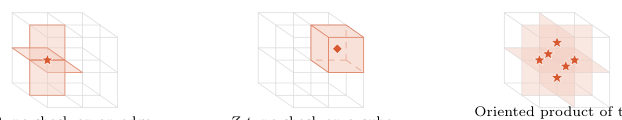
<figcaption class="paper-figure-caption"><b>Fig 1.</b> FIG. 1. Three-dimensional toric codes. (a) TC(3) 1 (Fp), with qudits on edges. (b) TC(3) 2 (Fp), with qudits on plaquettes. The right panels show local relations among the checks; in each oriented product, every qudit involved is acted on by exactly two of the checks, with opposite exponents. In all figures, blue refers to TC(3) 1 (Fp) and orange to TC(3) 2 (Fp); stars mark X-type checks and diamonds Z-type checks, and colored edges and plaquettes mark qudits.</figcaption>
</figure>
<figure class="paper-figure-card">
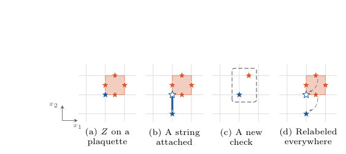
<figcaption class="paper-figure-caption"><b>Fig 2.</b> FIG. 3. Why the charge cannot be detached from the loop on the original lattice (x1x2-plane, both codes superposed; open stars mark checks no longer violated). (a) Z on a plaquette creates a loop and the charge −1 at its corner. (b) An at- tached string moves the charge but preserves the total. (c) A new check: the X-type check of TC(3) 1 (Fp) at a vertex times a power of that of TC(3) 2 (Fp) on the x1-edge above it. (d) With every vertex relabeled, the top edge of a plaquette removes the charge at its corner, but the bottom edge creates it at the vertex below.</figcaption>
</figure>
</div>
<p><strong>Summary.</strong> This paper develops a rigorous mathematical criterion to determine when higher-dimensional, translation-invariant topological CSS codes can be simplified or 'decoupled' into a stack of simpler toric codes. The key finding is that the primary obstruction to this decoupling is a structural 'gluing' between excitation layers, which can be removed via coarse-graining. This provides a powerful tool for analyzing the true logical capacity of quantum memory architectures.</p>
<p><strong>Why it may be interesting.</strong> It provides rigorous mathematical criteria for understanding the fault-tolerance capabilities of complex quantum codes in higher dimensions, which is fundamental to quantum computation theory.</p>
<details>
<summary>Detailed structure</summary>
<p><strong>Main problem.</strong> The paper addresses the systematic understanding and conditions for decoupling translation-invariant topological Calderbank-Shor-Steane (CSS) codes in higher dimensions ($D \ge 3$).</p>
<p><strong>Main result.</strong> Decoupling is possible if and only if, after coarse-graining, translations act trivially on every excitation layer and the 'gluing' between these layers vanishes.</p>
<p><strong>Method.</strong> The analysis uses algebraic methods involving Laurent polynomial rings and module theory to compare the code complex with the stack complex of higher-form toric codes.</p>
<p><strong>Model / system.</strong> The system is topological CSS codes defined on a superlattice ($\mathbb{Z}^D$) using $p$-ary qudits, which are compared against the structure of higher-form toric codes.</p>
<p><strong>Key observables.</strong> The superselection profile, which describes how excitation layers are 'glued together', and the number of logical qudits encoded on a torus.</p>
<p><strong>Important parameters / regimes.</strong> The spatial dimension $D$, the prime $p$ defining the qudits, and the lattice structure (superlattice/torus).</p>
<p><strong>Assumptions / limitations.</strong> The code is assumed to have finitely many excitation types in each layer, and the analysis relies on algebraic machinery involving module resolutions and coarse-graining procedures.</p>
<p><strong>Figures summary.</strong> Figure 1 illustrates 3D toric codes, showing the structure of $    ext{TC}^{(3)}_1(\mathbb{F}_p)$ and $    ext{TC}^{(3)}_2(\mathbb{F}_p)$ using different types of checks (qudits on edges/plaquettes, etc.).</p>
<p><strong>Paper structure.</strong> The paper develops the theory by establishing algebraic criteria for decoupling, identifying the 'gluing' as the primary obstruction, and concluding with an explicit algorithm for constructing the necessary Clifford circuit.</p>
</details>
<details>
<summary>Abstract</summary>
<p>Topological Calderbank-Shor-Steane (CSS) codes in more than two spatial dimensions offer features useful for fault-tolerant quantum computation, such as transversal non-Clifford gates and single-shot decoding, but a systematic understanding of them is still lacking. One approach is to decouple a code: map it to a stack of higher-form toric codes by a finite-depth local CSS-preserving Clifford circuit, possibly after adding ancillas. For translation-invariant $p$-ary CSS codes, where $p$ is prime ($p=2$ for qubits), we require the circuit to commute with the translations of a superlattice. In two dimensions, such a decoupling exists once these translations act trivially on every anyon type. In higher dimensions, excitations are sorted by their dimension into superselection layers, which can remain glued together even when translations act trivially on each layer. We show that this gluing is the only remaining obstruction: a code can be decoupled on a superlattice exactly when, after coarse-graining to it, translations act trivially on every layer and the gluing vanishes. Moreover, for a code with finitely many excitation types in each layer and $m$ nonzero layers, once translations act trivially on every layer, further coarse-graining by a factor of $p^{m-1}$ in every direction removes the aforementioned gluing. Physically, the same criterion determines when the code encodes the maximal number of logical qudits on a finite torus. Finally, we give an explicit algorithm that constructs the decoupling as a circuit of SUM (qudit CNOT) and SWAP gates.</p>
</details>
<p><sub><a href="#top">↑ back to top</a></sub></p>

<p><a id="paper-2610.39106"></a></p>
<h3 id="virasoro_blocks-software-for-the-2d-bootstrap"><a href="http://arxiv.org/abs/2610.39106v1">virasoro_blocks: Software for the 2d bootstrap</a></h3>
<p><strong>Authors:</strong> David Poland<br>
<strong>Type:</strong> theory · <strong>Category:</strong> statistical mechanics · <strong>PDF:</strong> <a href="https://arxiv.org/pdf/2610.39106v1">https://arxiv.org/pdf/2610.39106v1</a><br>
<strong>Analysis basis:</strong> full PDF text, analyzed in chunks</p>
<div class="figure-strip-hint">↔ Scroll figures horizontally</div>
<div class="paper-figures-scroll">
<figure class="paper-figure-card">
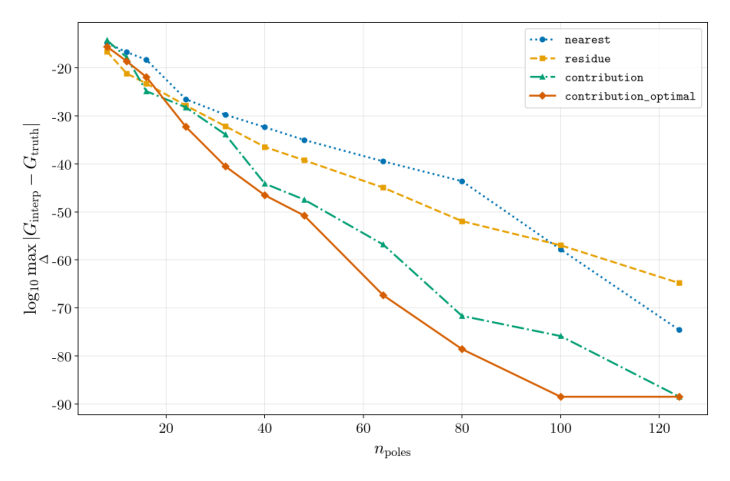
<figcaption class="paper-figure-caption"><b>Fig 1.</b> Figure 1: Maximum absolute error over ∆of the interpolated (m, n) = (0, 0) entry of the spin-4 block at c = 2, ∆ϕ = 1</figcaption>
</figure>
<figure class="paper-figure-card">
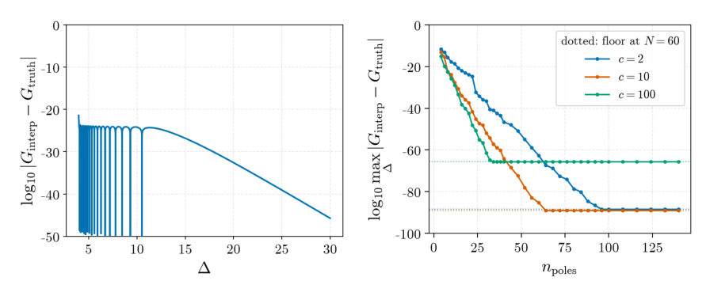
<figcaption class="paper-figure-caption"><b>Fig 2.</b> Figure 2: Left: absolute error |Ginterp −Gtruth| of the interpolated (0, 0) entry of the spin-4 block at c = 2 with ∆ϕ = 1</figcaption>
</figure>
<figure class="paper-figure-card">
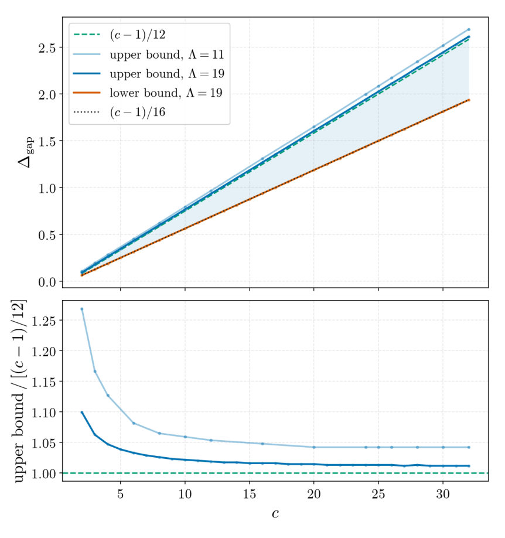
<figcaption class="paper-figure-caption"><b>Fig 3.</b> Figure 3: Top: the window not excluded by the truncated scalar-gap problem, as a function of the central charge, for four-point functions of an identical scalar ϕ with ∆ϕ = ∆gap in theories whose Virasoro primary spectrum contains only scalars. The upper bound is shown at Λ = 11 (light) and Λ = 19 (dark). The lower bound and the shading are at Λ = 19. The green dashed line is the Liouville threshold ∆= (c−1)/12, and the dotted line ∆= (c−1)/16 is drawn over the lower bound. Bottom: the upper bound divided by (c−1)/12. The bisection tolerance is (c −1)/1200 at Λ = 11 and (c −1)/6000 at Λ = 19. The central charges c = 25, 26, and 28 are singular values of the recursion, where the blocks are...</figcaption>
</figure>
<figure class="paper-figure-card">
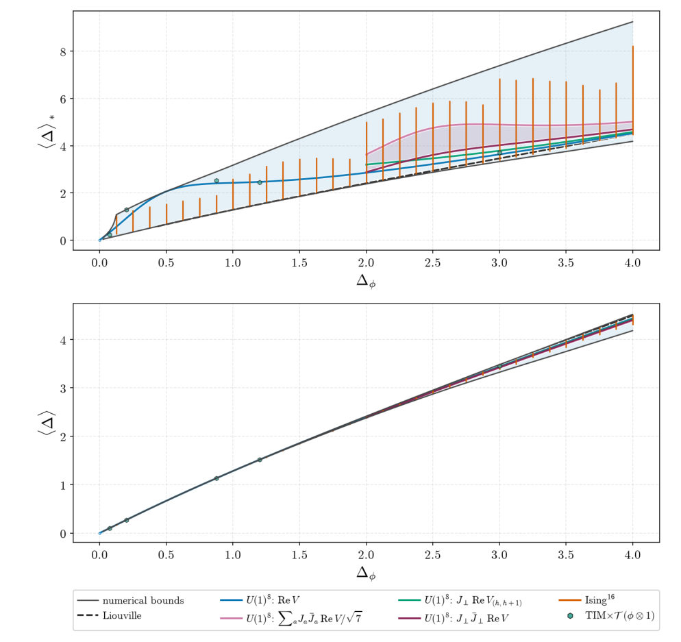
<figcaption class="paper-figure-caption"><b>Fig 4.</b> Figure 4: Upper and lower bounds (solid) on the normalized first moment at c = 8, Λ = 19, as a function of ∆ϕ. Top: identity excluded, ⟨∆⟩∗. Bottom: identity included, ⟨∆⟩. The dashed curve is Liouville theory, computed from the DOZZ structure constants. The solid curves are the free bosons U(1)8 (the vertex operator Re V and its current dressings), and shading between the two bilinear-current curves gives the range over their mixtures. Orange bars give the numerically estimated ranges over real mixtures in Ising16 (appendix C). Hexagons mark ϕ ⊗1 in TIM × T . Open circles mark limiting endpoints of the free-boson curves.</figcaption>
</figure>
<figure class="paper-figure-card">
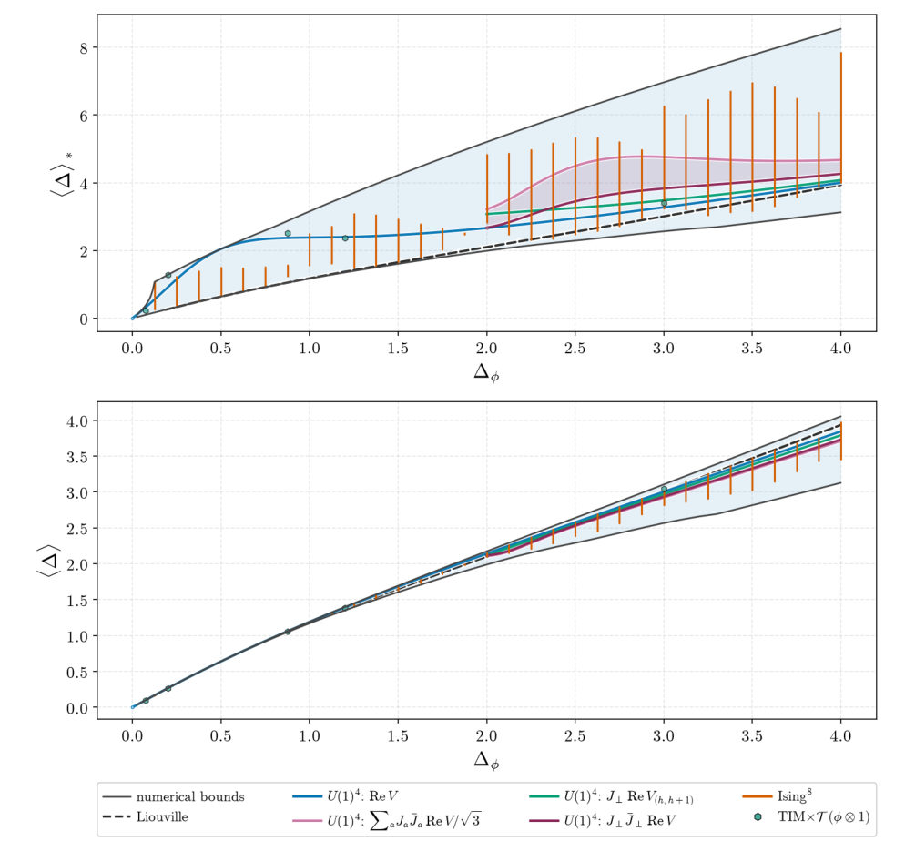
<figcaption class="paper-figure-caption"><b>Fig 5.</b> Figure 5: Bounds on the normalized first moment at c = 4, Λ = 19, with the identity excluded (top) and included (bottom), compared with Liouville theory (dashed), U(1)4 (solid curves), Ising8 (orange mixture bars), and TIM × T (hexagons), as in figure 4.</figcaption>
</figure>
</div>
<p><strong>Summary.</strong> This paper presents 'virasoro_blocks,' software designed to compute complex Virasoro conformal blocks necessary for the 2D conformal bootstrap. It overcomes the technical hurdle of excessive poles by using optimal interpolation, allowing for high-precision calculations across various central charges. The tool is demonstrated by deriving powerful, structured bounds on fundamental quantities like the scalar gap in CFTs.</p>
<p><strong>Why it may be interesting.</strong> While focused on CFT, the techniques of using numerical interpolation to handle complex analytic structures (poles) and deriving universal bounds from symmetry constraints are highly relevant to modern theoretical physics, including quantum many-body systems where spectral gaps and correlation functions are key.</p>
<details>
<summary>Detailed structure</summary>
<p><strong>Main problem.</strong> The paper addresses the computational challenge of evaluating Virasoro conformal blocks, which are central to the 2D bootstrap program used to constrain Conformal Field Theories (CFTs). The primary difficulty is the presence of too many Kac poles in the exact rational function form for use in semidefinite programming (SDP) approaches.</p>
<p><strong>Main result.</strong> The authors introduce 'virasoro_blocks' software that uses optimal interpolation to accurately compute these blocks while significantly reducing the number of poles. They successfully apply this to compute bounds on the scalar gap and the average exchanged dimension in four-point functions.</p>
<p><strong>Method.</strong> The core method involves computing the blocks via an expansion in the elliptic nome and then employing optimal interpolation techniques to approximate the resulting rational function, allowing for numerical stability in bootstrap calculations.</p>
<p><strong>Model / system.</strong> The theory concerns two-dimensional Conformal Field Theories (CFTs) governed by the Virasoro algebra. Specific applications include analyzing four-point functions of Virasoro primary operators and examining theories at singular central charges like $c=1$.</p>
<p><strong>Key observables.</strong> Virasoro conformal blocks, bounds on the scalar gap, and the average exchanged dimension $\langle\Delta
angle$ in four-point functions.</p>
<p><strong>Important parameters / regimes.</strong> Central charge ($c$), elliptic nome ($q$), and the truncation order ($N$) of the block expansion.</p>
<p><strong>Assumptions / limitations.</strong> The method assumes that optimal interpolation can maintain high accuracy while reducing the pole count, and it relies on the structure of the bootstrap program itself.</p>
<p><strong>Paper structure.</strong> The paper introduces the software, details the mathematical machinery (recursion relations, pole structure), and then illustrates its utility through two specific applications: computing bounds on the scalar gap and bounding the average exchanged dimension.</p>
</details>
<details>
<summary>Abstract</summary>
<p>We introduce virasoro_blocks, software that computes Virasoro conformal blocks at any central charge in a form suitable for the numerical bootstrap. At each finite order in the elliptic nome, Zamolodchikov's recursion gives the block as a positive prefactor times a rational function of the exchanged weight. However, its many Kac poles make it difficult to use in semidefinite programming approaches to the bootstrap. In this software we use optimal interpolation to reduce the number of poles while keeping high accuracy. The software works in arbitrary precision and handles singular central charges, including the minimal models and $c=1$. It also computes global blocks, $N=1$ superconformal blocks, torus characters, and torus one-point blocks. We illustrate it with two applications. Assuming only scalar Virasoro primaries, we compute bounds on the scalar gap that approach the window of Liouville solutions between $(c-1)/16$ and $(c-1)/12$. We also bound the average exchanged dimension in four-point functions of identical scalars at several central charges. These bounds have a rich structure, and many known 2d CFTs lie on or near their boundary.</p>
</details>
<p><sub><a href="#top">↑ back to top</a></sub></p>

<p><a id="paper-2610.40573"></a></p>
<h3 id="what-can-be-computed-with-indefinite-causal-structure"><a href="http://arxiv.org/abs/2610.40573v1">What Can Be Computed with Indefinite Causal Structure?</a></h3>
<p><strong>Authors:</strong> Omri Shmueli<br>
<strong>Type:</strong> theory · <strong>Category:</strong> quantum information and computing · <strong>PDF:</strong> <a href="https://arxiv.org/pdf/2610.40573v1">https://arxiv.org/pdf/2610.40573v1</a><br>
<strong>Analysis basis:</strong> full PDF text, analyzed in chunks</p>
<div class="figure-strip-hint">↔ Scroll figures horizontally</div>
<div class="paper-figures-scroll">
<figure class="paper-figure-card">

<figcaption class="paper-figure-caption"><b>Fig 1.</b> Low-resolution page preview, page 2</figcaption>
</figure>
<figure class="paper-figure-card">
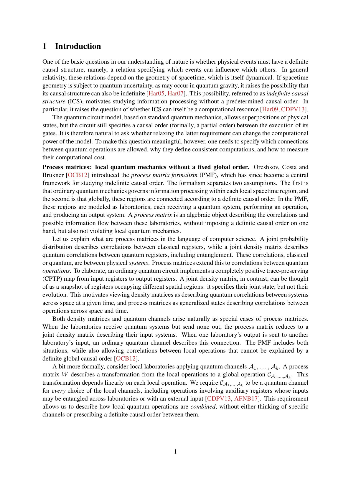
<figcaption class="paper-figure-caption"><b>Fig 2.</b> Low-resolution page preview, page 3</figcaption>
</figure>
<figure class="paper-figure-card">
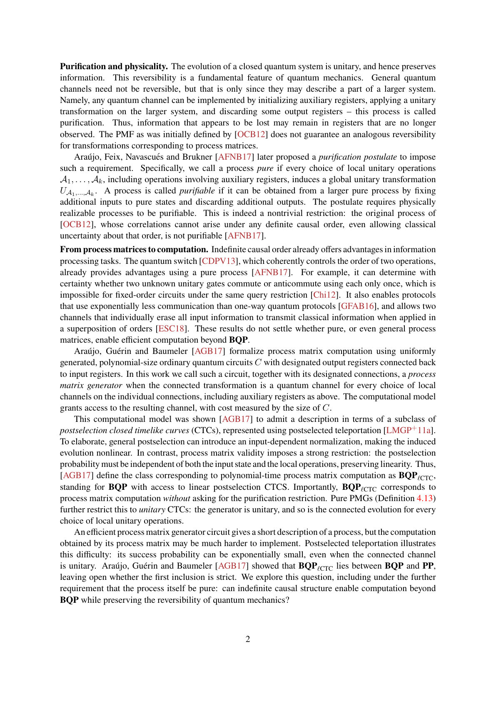
<figcaption class="paper-figure-caption"><b>Fig 3.</b> Low-resolution page preview, page 4</figcaption>
</figure>
<figure class="paper-figure-card">
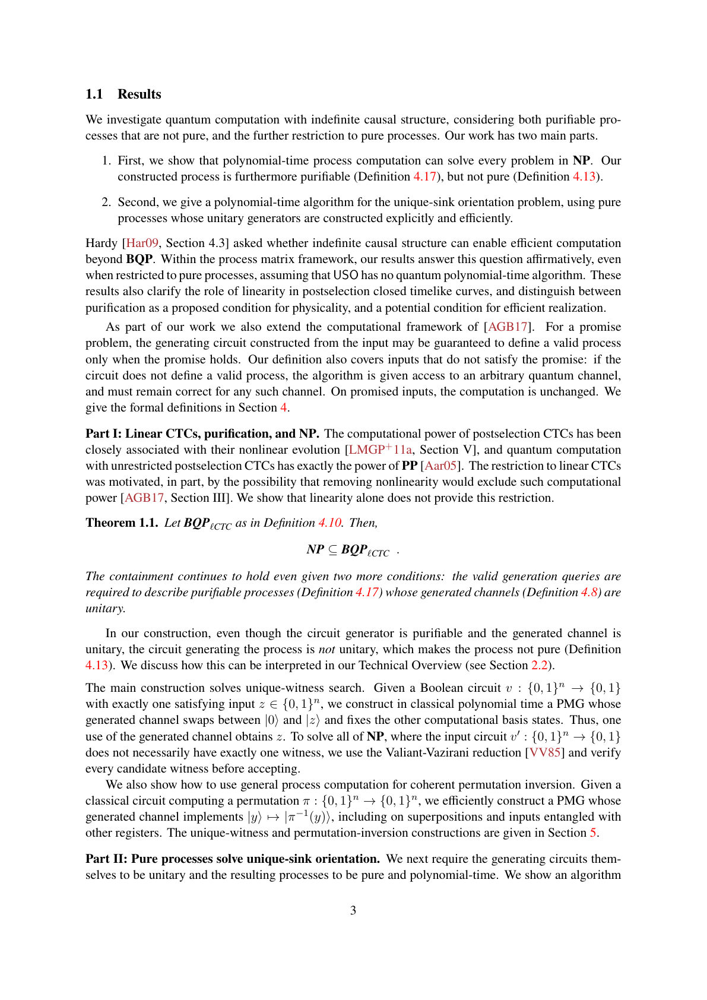
<figcaption class="paper-figure-caption"><b>Fig 4.</b> Low-resolution page preview, page 5</figcaption>
</figure>
<figure class="paper-figure-card">
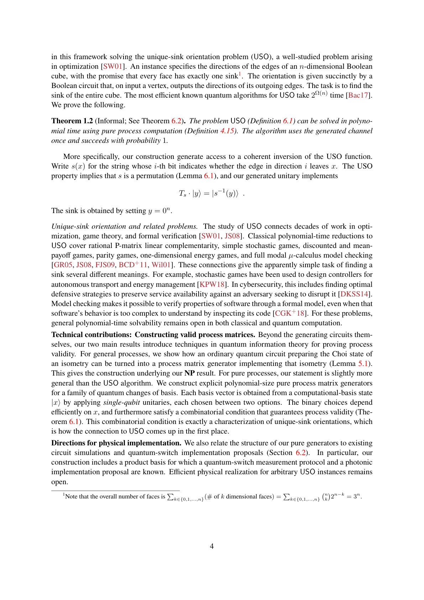
<figcaption class="paper-figure-caption"><b>Fig 5.</b> Low-resolution page preview, page 6</figcaption>
</figure>
</div>
<p><strong>Summary.</strong> This work explores quantum computation under an indefinite causal structure using the Process Matrix Formalism. It demonstrates that this framework allows for solving all NP problems and, under specific conditions, suggests computational power exceeding BQP. The research is significant for understanding the fundamental limits of quantum computation when causality constraints are relaxed.</p>
<p><strong>Why it may be interesting.</strong> The exploration of non-causal quantum computation provides a theoretical framework for understanding potential computational advantages beyond standard quantum circuit models, which is highly relevant to the foundations of quantum information.</p>
<details>
<summary>Detailed structure</summary>
<p><strong>Main problem.</strong> The paper investigates whether quantum computation can gain enhanced power when the sequence of operations does not need to follow a fixed, definite causal order.</p>
<p><strong>Main result.</strong> It shows that general process matrix computation is sufficient to solve every problem in NP, and under certain restrictions, indefinite causal order can provide computational power beyond BQP, even while maintaining unitarity.</p>
<p><strong>Method.</strong> The analysis uses the Process Matrix Formalism (PMF) to model quantum operations without fixed causality, establishing computational complexity bounds by relating the structure of the generating circuits to known complexity classes.</p>
<p><strong>Model / system.</strong> The core model is the Process Matrix Formalism, which describes correlations between quantum operations. The computation is modeled by a quantum circuit generating a process matrix, with complexity measured by the circuit size.</p>
<p><strong>Key observables.</strong> Computational complexity classes (NP, BQP), the process matrix itself, and the operator norm/Frobenius norm used to bound approximation errors.</p>
<p><strong>Important parameters / regimes.</strong> The restriction to pure process matrices, the approximation error parameter $\eta$, and the computational cost measured by circuit size.</p>
<p><strong>Assumptions / limitations.</strong> The analysis relies on the purification postulate for physical processes and makes assumptions regarding the computational difficulty of unique-sink orientation (USO).</p>
<p><strong>Paper structure.</strong> The paper progresses by introducing the PMF, establishing that general computation reaches NP, then restricting to pure processes to solve USO, and finally proving bounds on the difference between related unitary operations.</p>
</details>
<details>
<summary>Abstract</summary>
<p>Can quantum computation become more powerful when operations do not need to follow a definite causal order? We study this question in the process matrix formalism of Oreshkov et al. (Nature Communications, 2012), which allows quantum operations to be connected without a fixed global order. In the computational model, a quantum circuit succinctly describes a process matrix, and the algorithm is given access to its generated channel, with computational cost measured by the size of the generating circuit.   We give polynomial-time algorithms in two settings. First, general process matrix computation suffices to solve every problem in $\textbf{NP}$. The valid processes used by our algorithm satisfy the purification postulate of Araújo et al. (Quantum, 2017), and their generated channels are unitary, although their generating circuits are not. Second, requiring the process matrices themselves to be pure, we give a polynomial-time algorithm for unique-sink orientation, a general problem capturing several longstanding computational problems in optimization. Our unitary generators are constructed explicitly and efficiently. Assuming that unique-sink orientation has no quantum polynomial-time algorithm, our result shows that indefinite causal order can provide computational power beyond $\textbf{BQP}$ within the process matrix formalism, even while preserving unitarity.</p>
</details>
<p><sub><a href="#top">↑ back to top</a></sub></p>
</details>
<h2 id="secondary-cond-mat-archives">Secondary cond-mat archives</h2>
<p><em>Papers from cond-mat.mtrl-sci, mes-hall, other, soft, supr-con. These archives are de-prioritized — they appear at the end regardless of relevance score.</em></p>
<h3 id="relevant-in-secondary-archives-33">Relevant in secondary archives (33)</h3>

<p><a id="paper-2610.39968"></a></p>
<h3 id="ghosts-in-the-nanomachine-dynamical-slowing-down-in-the-phase-space-of-nanomechanical-strings"><a href="http://arxiv.org/abs/2610.39968v1">Ghosts in the nanomachine: dynamical slowing-down in the phase-space of nanomechanical strings</a></h3>
<p><strong>Authors:</strong> Samer Houri, Agnes Zinth, Menno Poot<br>
<strong>Type:</strong> experiment · <strong>Category:</strong> other · <strong>PDF:</strong> <a href="https://arxiv.org/pdf/2610.39968v1">https://arxiv.org/pdf/2610.39968v1</a><br>
<strong>Analysis basis:</strong> full PDF text, analyzed in chunks
<strong>Topic relevance:</strong> 🔥 <code>scars &amp; prethermalization</code> <strong>4/5</strong> · <code>driven-dissipative phase transition</code> <strong>3/5</strong> · <code>non-equilibrium universality</code> <strong>3/5</strong> · <code>methods for driven-dissipative</code> <strong>2/5</strong> · <code>quantum measurements</code> <strong>2/5</strong> · <code>Frenkel-Kontorova</code> <strong>1/5</strong> · <code>Keldysh / 2PI / non-Gaussian methods</code> <strong>1/5</strong> · <code>analog quantum simulation</code> <strong>1/5</strong> · <code>correlated / nonlocal dissipation</code> <strong>1/5</strong> · <code>quantum optics experiment</code> <strong>1/5</strong></p>
<div class="figure-strip-hint">↔ Scroll figures horizontally</div>
<div class="paper-figures-scroll">
<figure class="paper-figure-card">
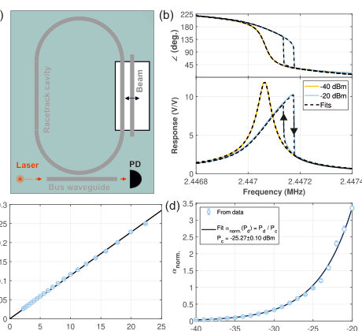
<figcaption class="paper-figure-caption"><b>Fig 1.</b> FIG. 1. (a) Schematic of the device: Racetrack cavity with a bus waveguide for coupling light in and out of the circuit. White area: suspended part where the high-stress silicon ni- tride beam (110 µm length) can oscillate freely. (b) Phase (top) and amplitude (bottom) of the driven response at two driving powers with Duffing fits (dashed). (c) Magnitude of the peak mechanical signal with a linear fit (black). (d) Nor- malized Duffing parameter with fit (black).</figcaption>
</figure>
<figure class="paper-figure-card">
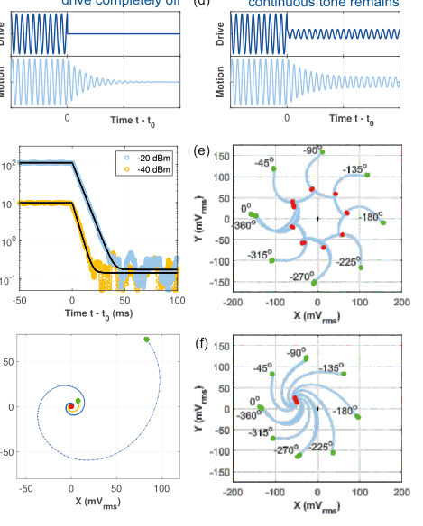
<figcaption class="paper-figure-caption"><b>Fig 2.</b> FIG. 2. Regular and two-tone ringdowns. (a) Illustration of the drive and motion in a regular ringdown. (b) Mea- sured ringdowns for two different drive powers with log. fits (black; see Supplementary Material for details). (c) Phase- space trajectories of the ringdowns of (b). (d) Illustration of a ringdown with a switching and continuous tone at the same frequency. (e) Phase-space trajectories for 9 phase dif- ferences (0 →360◦) between both the switching (−20 dBm) and continuous tone (−30 dBm), and the demodulation. Ev- ery ringdown is repeated 10×. (f) As (e) but only varying the phase of the switching tone, ϕsw. In all Figures, green (red) symbols mark the start (end) position and the...</figcaption>
</figure>
<figure class="paper-figure-card">
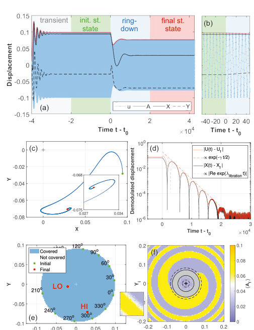
<figcaption class="paper-figure-caption"><b>Fig 3.</b> FIG. 3. Simulations of switching ringdowns of a Duffing res- onator with ω = 1.002, α/αc = 3.36 and γ = 0.001. (a) Time trace u(t) and its demodulation with the different regimes in- dicated. The transient is shown here for completeness, but is usually discarded. (b) zoom of (a). (c) Initial (green) and final steady state (red), and ringdown (blue) in phase space. The inset shows a zoom around the final state. (d) Decay towards the final state. (e) Phase space covered by ringdowns (blue) for 720 different values for ϕsw. A subset of initial states (green) is shown and the final states (red) reach both the high and low branch. (f) Average final-steady state amplitude ⟨Af⟩and phase space...</figcaption>
</figure>
<figure class="paper-figure-card">
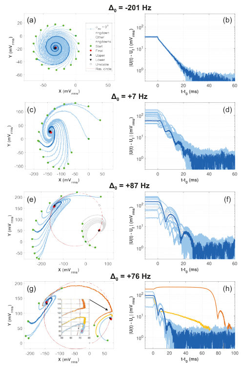
<figcaption class="paper-figure-caption"><b>Fig 4.</b> FIG. 4. Different regimes accessed with two-tone ringdowns. The left (right) column shows the phase space trajectories (amplitude decay). The ringdown for ϕsw = 0◦is always highlighted in dark blue. (a),(b) Linearized dynamics at large detuning ∆0. (c),(d) Large phase-space excursions in the single-solution regime. (e),(f) Large phase-space excursions in the multi-stable regime. (g),(h) “Scattering” off the un- stable solution. The inset shows a zoom of the phase-space trajectories. Continuous and switching tones were -20 dBm in all panels, except for (g),(h) where the latter was -25 dBm.</figcaption>
</figure>
<figure class="paper-figure-card">
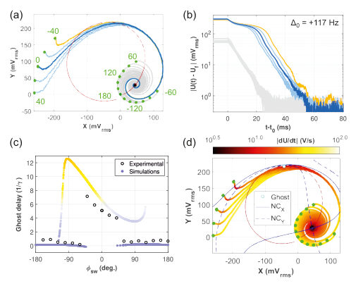
<figcaption class="paper-figure-caption"><b>Fig 5.</b> FIG. 5. Phase space trajectories (a) and amplitude decay (b) in the presence of a ghost. The detuning is just above the jump down. Continuous and switching tones were -20 dBm. (c) Measured and simulated delay in the decay. (d) Measured phase-space velocity during ringdown. The calculated null- clines (“NC”, blue) and location of the ghost are indicated (no free parameters). The dark red shape in (a) and (d) is the calculated resonant circle; the green points indicate the starting point of the trajectory and the label is its phase ϕsw in degrees. Unlike in the other Figures, here the final point is indicated in black.</figcaption>
</figure>
</div>

<p><strong>Summary.</strong> This paper experimentally explores the nonlinear dynamics of a nanomechanical resonator using a cavity opto-mechanical setup. By comparing single-tone and two-tone driving, the authors reveal exotic phase-space dynamics, including 'ghost slowing-down.' This demonstrates that the system's energy decay is highly sensitive to the driving protocol and can exhibit long-lived meta-states.</p>
<p><strong>Why it may be interesting.</strong> The work provides experimental evidence of complex, non-equilibrium dynamics (slowing down, meta-states) in a mechanical oscillator, which can be mapped onto models of energy trapping or slow relaxation in quantum or classical open systems.</p>
<details>
<summary>Detailed structure</summary>
<p><strong>Main problem.</strong> The study investigates the complex, nonlinear dynamics, particularly the phenomenon of 'dynamical slowing-down' and 'ghost slowing-down,' in nanomechanical resonators.</p>
<p><strong>Main result.</strong> The system exhibits exotic ringdown dynamics under two-tone driving, showing pronounced slowing down and meta-states attributed to the underlying phase space structure, which differs significantly from single-tone driving.</p>
<p><strong>Method.</strong> The research uses cavity opto-mechanical systems to experimentally measure ringdown dynamics in both the time domain and phase space, comparing single-tone versus two-tone driving protocols.</p>
<p><strong>Model / system.</strong> The physical platform is a cavity opto-mechanical system involving a suspended silicon nitride beam (nanomechanical resonator) exhibiting Duffing-type nonlinearity. The dynamics are analyzed in the phase space using a pseudo-Hamiltonian approach.</p>
<p><strong>Key observables.</strong> Ringdown amplitude decay rate, phase-space trajectories, energy evolution, and the measurable delay between drive switching and exponential decay.</p>
<p><strong>Important parameters / regimes.</strong> Driving tone configuration (single vs. two-tone), phase difference ($\phi_{sw}$), and detuning ($\Delta_0$).</p>
<p><strong>Assumptions / limitations.</strong> The analysis assumes the system can be described by a pseudo-Hamiltonian in the rotating frame, and the delay analysis relies on fitting data above the noise floor.</p>
<p><strong>Figures summary.</strong> Figures compare single-tone (regular decay) vs. two-tone (exotic dynamics) ringdowns in phase space. Other figures illustrate hysteresis, the persistence of the 'ghost' effect (slowing down), and energy non-monotonicity.</p>
<p><strong>Paper structure.</strong> The paper progresses by first establishing the nonlinear nature of the system, then comparing single-tone vs. two-tone ringdowns, demonstrating the exotic dynamics, and finally quantifying the delay and meta-states using detailed phase space analysis.</p>
</details>
<details>
<summary>Abstract</summary>
<p>The linear behavior of micro- and nanomechanical devices has been the topic of intense study over the past years. Their nonlinear behavior, on the other hand, continues to provide new and interesting dynamics. This work leverages a cavity opto-mechanical system whose very high sensitivity and low dissipation rate allows to capture the dynamics of fast transients that occur when strongly-driven nonlinear resonators relax to their equilibrium state. We experimentally study the ringdown dynamics of a nanomechanical Duffing resonator in both the time domain and in phase space. The resonator exhibits very different ringdown dynamics depending on whether it is subject to one or two tone driving. In the former case the ringdown follows a regular exponential decay, whereas the latter case shows exotic dynamics such as libration, slowing-down while scattering in phase-space, and ghost slowing-down. We demonstrate that this distinct difference can be attributed to the structure of the phase space itself. Surprisingly, we find that the energy in the resonator changes non-monotonously and that long delay between turning off the drive and the decay of the motion amplitude results in dynamical meta-states.</p>
</details>
<p><sub><a href="#top">↑ back to top</a></sub></p>

<p><a id="paper-2610.39886"></a></p>
<h3 id="quantum-hamiltonian-time-crystals-from-covariant-quantum-landau-lifshitz-gilbert-relaxation"><a href="http://arxiv.org/abs/2610.39886v1">Quantum Hamiltonian time crystals from covariant quantum Landau--Lifshitz--Gilbert relaxation</a></h3>
<p><strong>Authors:</strong> Antti J. Niemi<br>
<strong>Type:</strong> theory · <strong>Category:</strong> other · <strong>PDF:</strong> <a href="https://arxiv.org/pdf/2610.39886v1">https://arxiv.org/pdf/2610.39886v1</a><br>
<strong>Analysis basis:</strong> full PDF text, analyzed in chunks
<strong>Topic relevance:</strong> 🔥 <code>driven-dissipative phase transition</code> <strong>4/5</strong> · <code>methods for driven-dissipative</code> <strong>3/5</strong> · <code>non-equilibrium universality</code> <strong>3/5</strong> · <code>Keldysh / 2PI / non-Gaussian methods</code> <strong>2/5</strong> · <code>analog quantum simulation</code> <strong>2/5</strong> · <code>correlated / nonlocal dissipation</code> <strong>1/5</strong> · <code>quantum measurements</code> <strong>1/5</strong> · <code>scars &amp; prethermalization</code> <strong>1/5</strong></p>
<div class="figure-strip-hint">↔ Scroll figures horizontally</div>
<div class="paper-figures-scroll">
<figure class="paper-figure-card">
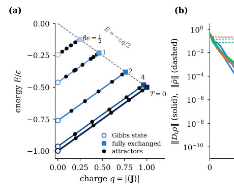
<figcaption class="paper-figure-caption"><b>Fig 1.</b> FIG. 1. Covariant relaxation of the quantum trimer, κ = 0.5, ε = √</figcaption>
</figure>
</div>

<p><strong>Summary.</strong> This paper develops a theoretical framework to construct quantum Hamiltonian time crystals using a symmetry-covariant quantum Landau-Lifshitz-Gilbert (qLLG) equation. By analyzing the energy minimization and subsequent dynamics, the authors demonstrate that the system settles into a stable, periodic motion along a symmetry orbit when constrained by non-zero magnetization. This offers a constructive pathway to observe time-periodic quantum states in magnetic molecular magnets.</p>
<p><strong>Why it may be interesting.</strong> This work provides a concrete, dynamical mechanism (the qLLG equation) to stabilize and observe non-equilibrium quantum states (time crystals) in condensed matter systems, which is highly relevant for understanding open quantum systems and non-equilibrium dynamics.</p>
<details>
<summary>Detailed structure</summary>
<p><strong>Main problem.</strong> The paper constructs and analyzes quantum Hamiltonian time crystals, which are periodic attractors in the density matrix evolution, circumventing theoretical constraints for closed Hamiltonian systems.</p>
<p><strong>Main result.</strong> The covariant quantum Landau-Lifshitz-Gilbert (qLLG) dynamics provide a constructive method to realize these time crystals, showing periodic motion along symmetry orbits for specific charge constraints.</p>
<p><strong>Method.</strong> The analysis involves minimizing the energy expectation value subject to fixed spectrum and charge expectations, and then simulating the evolution using the symmetry-covariant qLLG equation.</p>
<p><strong>Model / system.</strong> The model is a chiral spin trimer system, motivated by Cu3 molecular magnets, governed by an SU(2)-invariant Hamiltonian. The dynamics are described by a generalized qLLG equation acting on the density matrix.</p>
<p><strong>Key observables.</strong> Time crystal frequency, magnetization ($\langle\mathbf{J}
angle$), terminal covariant velocity ($\|D_t
ho\|$), and coherence amplitudes.</p>
<p><strong>Important parameters / regimes.</strong> Damping parameter ($\kappa$), charge expectation ($q$), and the ratio of energy gap to exchange gap ($eta\epsilon$).</p>
<p><strong>Assumptions / limitations.</strong> The method assumes the existence of a unique solution for the Lagrange multipliers and relies on the qLLG flow to drive the system towards the periodic attractor.</p>
<p><strong>Figures summary.</strong> Figures illustrate the energy landscape $E_{\min}(q)$ versus charge $q$, and show time evolution of observables like magnetization and coherences, confirming periodicity for the time crystal regime.</p>
<p><strong>Paper structure.</strong> The paper first establishes the theoretical framework by defining the time crystal condition via energy minimization. It then introduces and analyzes the dynamics using the qLLG equation, detailing the behavior in different coherence regimes (e.g., doublet-mixing branch) and confirming the approach to equilibrium or periodic motion.</p>
</details>
<details>
<summary>Abstract</summary>
<p>Classical Hamiltonian time crystals are constrained energy minima that move along symmetry orbits at frequencies set by Lagrange multipliers. We construct quantum counterparts by minimizing the energy over density matrices with fixed spectrum and charge expectations. A symmetry-covariant quantum Landau--Lifshitz--Gilbert equation selects them as periodic attractors, preserving the spectrum and fixing the multipliers dynamically. A chiral spin trimer motivated by Cu$_3$ molecular magnets realizes this motion at a prepared magnetization, without a Zeeman term.</p>
</details>
<p><sub><a href="#top">↑ back to top</a></sub></p>

<p><a id="paper-2610.39206"></a></p>
<h3 id="nodal-magnon-spin-current-at-an-antiferromagnetaltermagnet-junction"><a href="http://arxiv.org/abs/2610.39206v1">Nodal magnon spin current at an antiferromagnet/altermagnet junction</a></h3>
<p><strong>Authors:</strong> Koki Mizuno<br>
<strong>Type:</strong> theory · <strong>Category:</strong> other · <strong>PDF:</strong> <a href="https://arxiv.org/pdf/2610.39206v1">https://arxiv.org/pdf/2610.39206v1</a><br>
<strong>Analysis basis:</strong> full PDF text, analyzed in chunks
<strong>Topic relevance:</strong> 🔥 <code>Keldysh / 2PI / non-Gaussian methods</code> <strong>4/5</strong> · <code>methods for driven-dissipative</code> <strong>1/5</strong></p>
<div class="figure-strip-hint">↔ Scroll figures horizontally</div>
<div class="paper-figures-scroll">
<figure class="paper-figure-card">
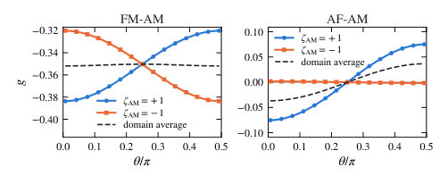
<figcaption class="paper-figure-caption"><b>Fig 1.</b> FIG. 2. The dimensionless spin current 𝑔as a function of the interface angle 𝜃. The left and right panels show the results for the FM/AM and AFM/AM junctions, respectively. The blue and red curves with circles and squares show the results for magnetic domains of altermagnet 𝜁AM = 1 and 𝜁AM = −1, respectively. The black dashed lines are the domain-averaged values. 𝐾= 0.05𝐽, 𝛿𝐽= 0.1𝐽, 𝑆= 1, 𝐽ex AA = 𝐽ex BB = −0.1𝐽, hence JAA = JBB = +0.1𝐽, 𝑘c = 1/𝑎, 𝑇= 𝐽𝑆, Δ𝑇= 0.4𝐽𝑆, 𝜂= 𝐽𝑆/32. 𝐽0 = 0.1𝐽for the ferromagnetic case, and 𝐽0 = −0.1𝐽for the antiferromagnetic and altermagnetic cases.</figcaption>
</figure>
<figure class="paper-figure-card">
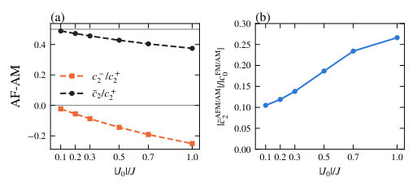
<figcaption class="paper-figure-caption"><b>Fig 2.</b> FIG. 3. Dependence on the inter-sublattice exchange |𝐽0|/𝐽for the symmetric coupling 𝑟= 𝐽ex BB/𝐽ex AA = 1. (a) The ratio of the blocked to the transmitting domain, 𝑐− 2 /𝑐+ 2, and the domain-averaged cos 2𝜃 component ¯𝑐2/𝑐+ 2 of the AFM/AM junction, where ¯𝑐𝑛= (𝑐+ 𝑛+ 𝑐− 𝑛)/2. The horizontal lines mark a perfect valve, 𝑐− 2 = 0 and ¯𝑐2/𝑐+ 2 = 1/2. (b) The domain-averaged cos 2𝜃component of the AFM/AM junction in units of the uniform component of the FM/AM junction. 𝐽0 is ferromagnetic in the FM and antiferromagnetic in the AFM and the AM, and the other parameters are the same as in Fig. 2, so that the magnon gap of the AFM and the AM, √︁</figcaption>
</figure>
<figure class="paper-figure-card">
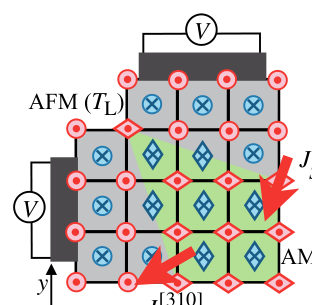
<figcaption class="paper-figure-caption"><b>Fig 3.</b> FIG. 4. Proposed lateral AFM/AM junctions with the compensated interfaces normal to [310] and [130], related by the reflection 𝜃→ 𝜋/2 −𝜃, under the temperature difference Δ𝑇= 𝑇L −𝑇R between the AFM and the AM. The interface spin current is read by the inverse spin Hall voltage of a heavy-metal electrode on the AFM; the two interfaces give equal and opposite currents.</figcaption>
</figure>
<figure class="paper-figure-card">
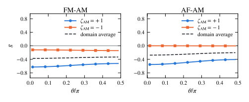
<figcaption class="paper-figure-caption"><b>Fig 4.</b> FIG. 5. The dimensionless spin current 𝑔as a function of the interface angle 𝜃for the asymmetric interface coupling 𝐽ex AA = −0.1𝐽and 𝐽ex BB = −0.05𝐽, i.e. 𝑟= 𝐽ex BB/𝐽ex AA = 0.5. The panels, curves, and the other parameters are the same as in Fig. 2 of the main text. Here, 𝑔is normalized by ((𝐽ex AA)2 + (𝐽ex BB)2)/2 according to the definition of 𝑔in the main text.</figcaption>
</figure>
<figure class="paper-figure-card">
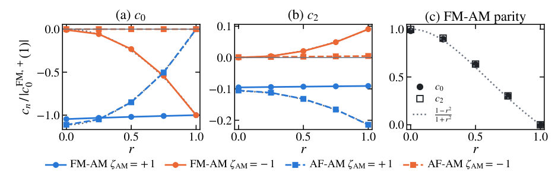
<figcaption class="paper-figure-caption"><b>Fig 5.</b> FIG. 6. Test of the diagonal approximation against the dependence of the harmonic components of the spin current on the interface asymmetry 𝑟= 𝐽ex BB/𝐽ex AA with 𝐽ex AA = −0.1𝐽fixed. (a) The uniform component 𝑐0 and (b) the cos 2𝜃component 𝑐2 of 𝑗𝑆𝑧(𝜃) = 𝑐0 + 𝑐2 cos 2𝜃+ · · · , in units of the magnitude of the uniform component of the FM/AM junction with 𝜁AM = +1 at 𝑟= 1. The dotted lines are proportional to 𝑟2 and 1 −𝑟2 in (a), and to 𝑟2 and (1 + 𝑟2)/2 in (b), as predicted by Eqs. (50) and (52). (c) The domain-odd/even ratio (𝑐+ 0 −𝑐− 0 )/(𝑐+ 0 + 𝑐− 0 ) (circles) and the domain-even/odd ratio (𝑐+ 2 + 𝑐− 2 )/(𝑐+ 2 −𝑐− 2 ) (squares) of the FM/AM junction, where 𝑐± 𝑛denotes 𝑐𝑛for 𝜁AM = ±1....</figcaption>
</figure>
</div>

<p><strong>Summary.</strong> This theoretical work analyzes the thermally driven magnon spin current across junctions between altermagnets and magnetic insulators (FM or AFM). It reveals distinct symmetry behaviors for the two junction types, most notably demonstrating that the AFM/AM junction functions as a magnon valve due to spin-dependent tunneling. The results provide quantitative predictions for controlling spin transport using magnetic order parameters.</p>
<p><strong>Why it may be interesting.</strong> The study of magnon transport and spin currents in magnetic junctions is highly relevant to spintronics and magnonics, providing theoretical insights into novel current control mechanisms like the magnon valve.</p>
<details>
<summary>Detailed structure</summary>
<p><strong>Main problem.</strong> The paper investigates the thermally driven magnon spin current across junctions involving an altermagnet (AM) coupled to either a ferromagnet (FM) or an antiferromagnet (AFM).</p>
<p><strong>Main result.</strong> The AFM/AM junction exhibits a magnon valve effect, where the current is suppressed when the interface spins are antiparallel, and the domain average of the spin current survives even when the uniform component vanishes.</p>
<p><strong>Method.</strong> The spin current expectation value is calculated using the Keldysh Green’s function method applied to a spin-wave Hamiltonian model.</p>
<p><strong>Model / system.</strong> The system consists of junctions (FM/AM or AFM/AM) modeled by spin-wave Hamiltonians, with the interface coupling treated via a nearest-neighbor interaction Hamiltonian. The analysis focuses on the resulting magnon spin current.</p>
<p><strong>Key observables.</strong> Spin current $j_{Sz}(	heta)$, its harmonic components ($c_0, c_2$), and the ratio of currents in different magnetic domains.</p>
<p><strong>Important parameters / regimes.</strong> Interface angle $   heta$, relative orientation of Néel vectors, and the strength of inter-sublattice exchange couplings ($J_{ex}$).</p>
<p><strong>Assumptions / limitations.</strong> The analysis is performed in the sublattice-symmetric interface case, and approximations like the diagonal approximation are used in the calculation of current components.</p>
<p><strong>Figures summary.</strong> Figures illustrate the dimensionless spin current $g$ vs. angle $ heta$ for both junction types, comparing domain averages and showing the dependence on magnetic domain configurations.</p>
<p><strong>Paper structure.</strong> The paper systematically calculates the spin current using Keldysh formalism, contrasting the symmetry properties and domain averaging behavior between FM/AM and AFM/AM junctions, and detailing the mechanism behind the magnon valve effect.</p>
</details>
<details>
<summary>Abstract</summary>
<p>We investigate the thermally driven magnon spin current across a junction between a $d$-wave altermagnet (AM) and a ferromagnet (FM) or an antiferromagnet (AFM).   The current consists of a component independent of the interface angle and an angularly dependent component with the $d$-wave form.   For a sublattice-symmetric interface, the two junctions behave oppositely under reversal of the altermagnetic domain: in the FM/AM junction the angularly dependent component is odd and cancels on averaging over the domains, whereas in the AFM/AM junction the angularly independent component vanishes by symmetry and the angularly dependent component survives the domain average at a fixed Néel vector of the AFM.   Both follow from a selective tunneling: a pair of spins bonded across the interface transmits magnons when the spins are parallel and not when antiparallel, which makes the AFM/AM junction a magnon valve: the configuration in which the bonded spins are antiparallel blocks the current up to the sublattice admixture of the magnons.   The anisotropic tunneling is detectable as the sign reversal of the current between the interfaces normal to $[310]$ and $[130]$, and the valve reads the Néel vector of the altermagnet relative to that of the antiferromagnet through the magnitude of the current at a fixed interface.</p>
</details>
<p><sub><a href="#top">↑ back to top</a></sub></p>

<p><a id="paper-2610.40103"></a></p>
<h3 id="topological-defect-trains-excited-by-a-boundary-discontinuity-in-the-two-dimensional-complex-ginzburg-landau-equation"><a href="http://arxiv.org/abs/2610.40103v1">Topological defect trains excited by a boundary discontinuity in the two-dimensional complex Ginzburg-Landau equation</a></h3>
<p><strong>Authors:</strong> Alice C. Quillen, Laura Quinonez<br>
<strong>Type:</strong> theory · <strong>Category:</strong> other · <strong>PDF:</strong> <a href="https://arxiv.org/pdf/2610.40103v1">https://arxiv.org/pdf/2610.40103v1</a><br>
<strong>Analysis basis:</strong> full PDF text, analyzed in chunks
<strong>Topic relevance:</strong> <code>driven-dissipative phase transition</code> <strong>3/5</strong> · <code>non-equilibrium universality</code> <strong>3/5</strong> · <code>Keldysh / 2PI / non-Gaussian methods</code> <strong>2/5</strong> · <code>analog quantum simulation</code> <strong>2/5</strong> · <code>methods for driven-dissipative</code> <strong>2/5</strong> · <code>Frenkel-Kontorova</code> <strong>1/5</strong> · <code>correlated / nonlocal dissipation</code> <strong>1/5</strong></p>
<div class="figure-strip-hint">↔ Scroll figures horizontally</div>
<div class="paper-figures-scroll">
<figure class="paper-figure-card">
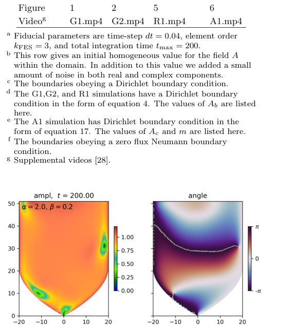
<figcaption class="paper-figure-caption"><b>Fig 1.</b> FIG. 1: We show a snapshot from the G1 simulation with parameters α, β and integration time printed on the left panel. Additional parameters are listed in Ta- ble I. The left panel shows the magnitude |A| and the right panel shows the complex phase angle arg A. The axes show the domain coordinates. There is a disconti- nuity on the boundary at the origin. The corner at the origin creates defects in pairs, first one moving to the left near the boundary and with a positive topological charge +1 and then one moving right with the oppo- site charge, -1. The defects remain near the bound- ary and move upward until they exit the domain at the top which obeys a Neumann (zero flux) boundary...</figcaption>
</figure>
<figure class="paper-figure-card">
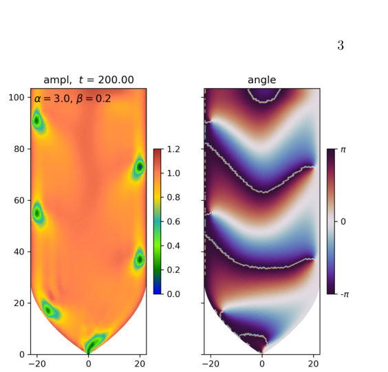
<figcaption class="paper-figure-caption"><b>Fig 2.</b> FIG. 2: Similar to Figure 1 except we show a shap- shot from the G2 simulation. The discontinuity on the bottom generates two trains of defects. Defects with a topological charge of +1 drift upward along the left boundary those with a charge of -1 drift upward along the right boundary.</figcaption>
</figure>
<figure class="paper-figure-card">
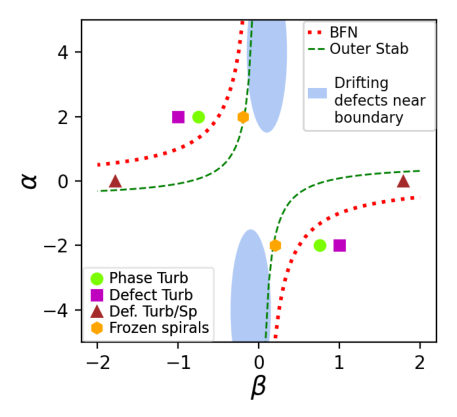
<figcaption class="paper-figure-caption"><b>Fig 3.</b> FIG. 3: The Benjamin-Feir-Newell (BFN) line (1+αβ = 0) and is shown with dotted red lines. In the lower right or upper left quadrants and between the Outer Stability line (shown with dashed green lines) and the BFN line, bound spiral states can exist [2, 4]. Much of the complex phenomenology of the two-dimensional CGLE, including phase and defect turbulence, is in the vicinity of these two lines [2, 10]. Perturbations on a plane wave (encompassing those at long wavelength) are stable as long as the Benjamin-Feir-Newell crite- rion, 1 + αβ &gt; 0 holds. Thus the right top and left bottom quadrants can harbor stable plane waves. Pa- rameters for illustrations of simulations of the two-...</figcaption>
</figure>
<figure class="paper-figure-card">
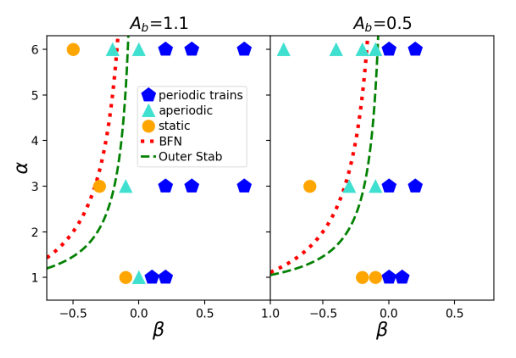
<figcaption class="paper-figure-caption"><b>Fig 4.</b> FIG. 4: For simulations in the same domain as simula- tion G1, we ran simulations with different α, β param- eters and Dirichlet boundary value Ab with Ab = 1.1 and 0.5 in the left and right panels, respectively. The left boundary has A = −Ab and the right boundary has A = Ab. Simulations are shown with a blue pentagons if asymptotic behavior is a periodic train of defects launched from the boundary. Simulations are shown with a turquoise triangle if defects are launched by the boundary discontinuity but can persist in the domain causing non-periodic behavior. Simulations are marked with a red dot if the asymptotic state was static. Outer stability and BFN lines (see Figure 3) are also...</figcaption>
</figure>
<figure class="paper-figure-card">
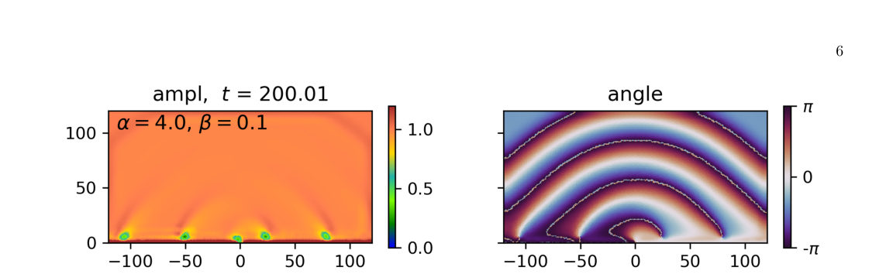
<figcaption class="paper-figure-caption"><b>Fig 5.</b> FIG. 5: Similar to Figure 1 except we show a snapshot from the R1 simulation. A discontinuity at the origin launches a train of defects with +1 topological charge drifting to the left and a train of defects with -1 topological charge drifting to the right.</figcaption>
</figure>
</div>

<p><strong>Summary.</strong> This paper uses numerical simulations to study the complex Ginzburg-Landau equation, focusing on how a discontinuity in the boundary condition can force the creation of periodic trains of topological defects. The findings map out the parameter space where this sustained defect generation occurs, providing insights into pattern formation in non-linear wave media.</p>
<p><strong>Why it may be interesting.</strong> The CGLE is a canonical model for pattern formation and wave dynamics, making this work relevant to understanding complex spatio-temporal structures in non-equilibrium systems, which has parallels in quantum optics and open quantum systems.</p>
<details>
<summary>Detailed structure</summary>
<p><strong>Main problem.</strong> The study investigates how static, non-zero Dirichlet boundary conditions, particularly those with a discontinuity, can drive the formation and sustained movement of periodic trains of topological defects in the complex Ginzburg-Landau equation (CGLE).</p>
<p><strong>Main result.</strong> The system exhibits a stable, periodic state where defects are continuously launched by the boundary discontinuity, forming observable defect trains in specific parameter regimes.</p>
<p><strong>Method.</strong> The research relies heavily on numerical simulations using the finite element method to solve the time-dependent, non-linear partial differential equation in two dimensions.</p>
<p><strong>Model / system.</strong> The model is the two-dimensional complex Ginzburg-Landau equation (CGLE), a non-linear reaction-diffusion system relevant to oscillatory media in optics and hydrodynamics. The simulations are performed on various domains with mixed Dirichlet and Neumann boundary conditions.</p>
<p><strong>Key observables.</strong> Topological defects (where amplitude |A|=0), topological charge ($m_{top}$), defect velocity ($v_d$), and the existence/stability of periodic defect trains.</p>
<p><strong>Important parameters / regimes.</strong> The coupling constants $\alpha$ and $eta$ are crucial, as is the boundary value $A_b$ and the presence/magnitude of the boundary discontinuity.</p>
<p><strong>Assumptions / limitations.</strong> The analysis assumes the validity of the CGLE model and employs numerical approximations like the Crank-Nicolson time-stepping scheme and finite element discretization.</p>
<p><strong>Figures summary.</strong> Figures illustrate snapshots of defect creation and periodic trains launched by boundary discontinuities, and Figure 3 maps the parameter space $(\alpha, eta)$ showing the regions where these defect trains occur relative to stability lines.</p>
<p><strong>Paper structure.</strong> The paper first establishes the physical model (CGLE) and the role of boundary conditions. It then details the numerical methodology (finite element formulation, time integration schemes) before presenting the key results: the observation of periodic defect trains driven by boundary discontinuities and mapping these phenomena in the parameter space.</p>
</details>
<details>
<summary>Abstract</summary>
<p>With numerical simulations of the complex Ginzburg-Landau equation in a two-dimensional space, we find that a stationary but non-zero Dirichlet boundary condition with a discontinuity can drive a periodic train of evenly spaced topological defects that drift along and in proximity to the boundary.</p>
</details>
<p><sub><a href="#top">↑ back to top</a></sub></p>

<p><a id="paper-2610.38928"></a></p>
<h3 id="collective-sliding-relaxor-ferroelectricity-across-thousand-layer-van-der-waals-superstructures"><a href="http://arxiv.org/abs/2610.38928v1">Collective sliding relaxor ferroelectricity across thousand-layer van der Waals superstructures</a></h3>
<p><strong>Authors:</strong> Nianze Shang, Cuiju Yu, Yucai Lin, Juan C. Arias-Muñoz, Jiajie Qi, Quanlin Guo, MD Gius Uddin, Youqiang Huang, Tuomas Pajunpää, Christopher P. Edwards, Rodolfo E. Canet-Albiach, Faisal Ahmed, Andreas C. Liapis, Yaoqiang Zhou, Zhibin Zhang, Hao Hong, Qing Dai, Andrea Alù, José L. Lado, Kaihui Liu, Zhipei Sun<br>
<strong>Type:</strong> both · <strong>Category:</strong> other · <strong>PDF:</strong> <a href="https://arxiv.org/pdf/2610.38928v1">https://arxiv.org/pdf/2610.38928v1</a><br>
<strong>Analysis basis:</strong> full PDF text, analyzed in chunks
<strong>Topic relevance:</strong> <code>analog quantum simulation</code> <strong>3/5</strong> · <code>Frenkel-Kontorova</code> <strong>2/5</strong> · <code>driven-dissipative phase transition</code> <strong>2/5</strong> · <code>Keldysh / 2PI / non-Gaussian methods</code> <strong>1/5</strong> · <code>methods for driven-dissipative</code> <strong>1/5</strong> · <code>non-equilibrium universality</code> <strong>1/5</strong> · <code>quantum measurements</code> <strong>1/5</strong></p>
<div class="figure-strip-hint">↔ Scroll figures horizontally</div>
<div class="paper-figures-scroll">
<figure class="paper-figure-card">
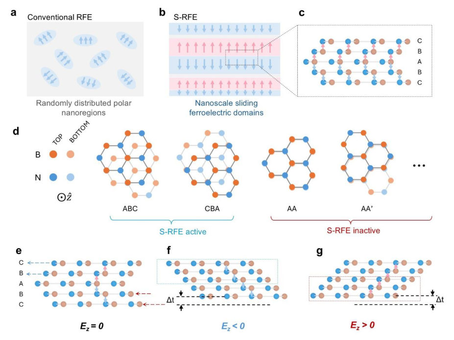
<figcaption class="paper-figure-caption"><b>Fig 1.</b> Figure 1. Concept of sliding relaxor ferroelectricity (S-RFE). a. Schematic of conventional</figcaption>
</figure>
<figure class="paper-figure-card">
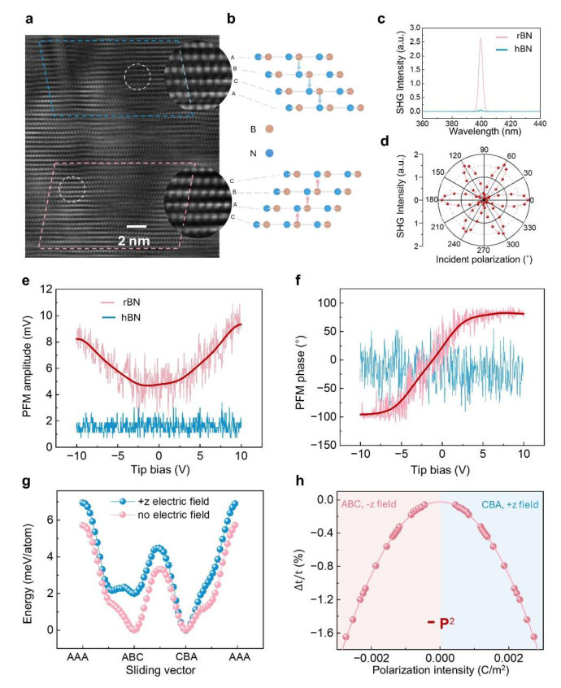
<figcaption class="paper-figure-caption"><b>Fig 2.</b> Figure 2. Experimental observation of S-RFE in rBN. a. Direct observation of coexisting</figcaption>
</figure>
<figure class="paper-figure-card">
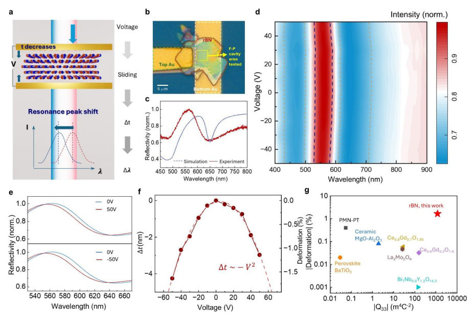
<figcaption class="paper-figure-caption"><b>Fig 3.</b> Figure 3. Giant electromechanical response of S-RFE rBN. a. Schematics of the</figcaption>
</figure>
<figure class="paper-figure-card">
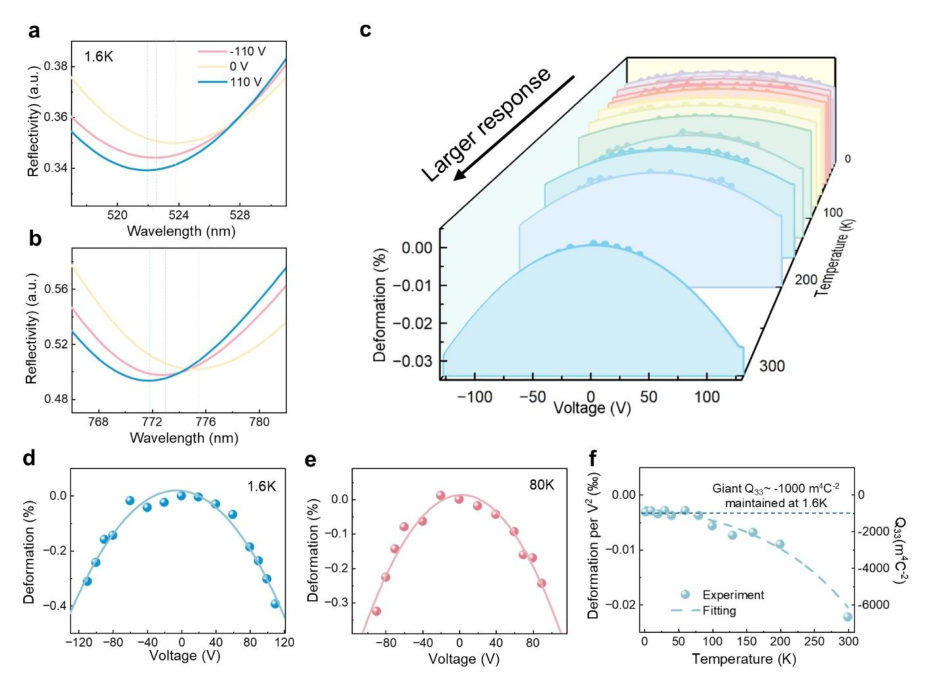
<figcaption class="paper-figure-caption"><b>Fig 4.</b> Figure 4. Robust cryogenic S-RFE. a, b. Voltage-dependent reflectivity spectra of S-RFE</figcaption>
</figure>
<figure class="paper-figure-card">
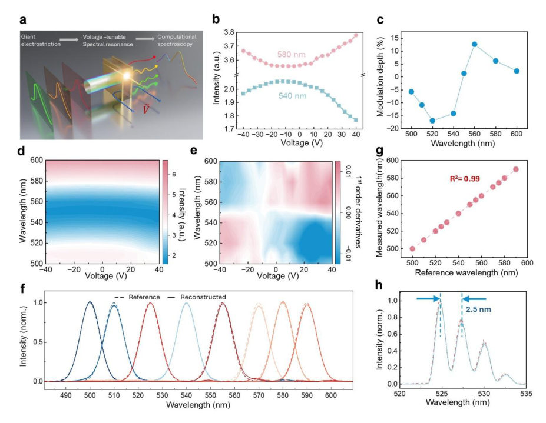
<figcaption class="paper-figure-caption"><b>Fig 5.</b> Figure 5. Photonic applications of S-RFE. a. Concept of an S-RFE based computational</figcaption>
</figure>
</div>

<p><strong>Summary.</strong> This work introduces Sliding Relaxor Ferroelectricity (S-RFE) in van der Waals boron nitride, showing that structural design, rather than chemical disorder, can yield giant ferroelectric responses. By engineering coexisting stacking phases, the material exhibits collective interlayer sliding that results in massive electrostriction. This establishes a new, highly controllable platform for advanced electromechanical and photonic devices.</p>
<p><strong>Why it may be interesting.</strong> While the primary focus is condensed matter electro-optics, the concept of emergent collective behavior from engineered atomic-scale interfaces (interlayer sliding) is analogous to studying collective excitations or phase transitions in artificial quantum materials or engineered quantum simulators.</p>
<details>
<summary>Detailed structure</summary>
<p><strong>Main problem.</strong> To establish a new, structurally engineered route to achieve relaxor ferroelectricity (S-RFE) that bypasses the need for chemical disorder.</p>
<p><strong>Main result.</strong> The authors demonstrate that collective interlayer sliding in engineered van der Waals superstructures can generate giant electromechanical responses, achieving electrostriction coefficients orders of magnitude larger than conventional materials.</p>
<p><strong>Method.</strong> The study combines experimental characterization (TEM, PFM, optical spectroscopy) with theoretical modeling (DFT calculations) to map the phase transitions and electromechanical coupling.</p>
<p><strong>Model / system.</strong> The system is rhombohedral boron nitride (rBN) grown as a van der Waals superlattice, which exhibits engineered stacking-phase heterogeneity (coexisting ABC and CBA domains). The ferroelectric behavior arises from the cooperative sliding between these distinct stacking phases under an applied electric field.</p>
<p><strong>Key observables.</strong> Reversible electromechanical deformation ($\sim -1.6\%$), electrostriction coefficient ($Q_{33} \sim 1200 	ext{ m}^4	ext{C}^{-2}$), and spectral shifts in Fabry-Pérot cavities.</p>
<p><strong>Important parameters / regimes.</strong> Thickness scale ($\sim 1000$ atomic layers), operating temperature range (down to $1.6 	ext{ K}$), and applied electric field strength.</p>
<p><strong>Assumptions / limitations.</strong> The analysis assumes that the observed spectral shift is directly proportional to the thickness change induced by the polarization switching, and that the electrostriction coefficient can be derived from a quadratic fit to the voltage dependence.</p>
<p><strong>Figures summary.</strong> Figures illustrate the mechanism contrasting conventional RFE with S-RFE, show TEM confirmation of coexisting stacking phases, and demonstrate the giant electrostriction via spectral shifts in F-P cavities across varying temperatures.</p>
<p><strong>Paper structure.</strong> The paper progresses by first defining the problem (disorder-based RFE), introducing the S-RFE concept based on structural engineering in rBN, providing multi-modal evidence (TEM, PFM, DFT) for the sliding mechanism, and finally quantifying the giant electromechanical response using optical spectroscopy.</p>
</details>
<details>
<summary>Abstract</summary>
<p>Relaxor ferroelectrics are among the most important electromechanical materials owing to their exceptionally large electrostrictive responses. However, conventional relaxor behavior is generally associated with chemical complexity and structural disorder, where local compositional fluctuations generate polar nanoregions, making the microscopic origin of this behavior difficult to control and engineer. Here we report sliding relaxor ferroelectricity (S-RFE), a previously unknown relaxor state in which engineered stacking-phase heterogeneity enables cooperative interlayer sliding to generate collective relaxor behavior. Through stacking-phase engineering in rhombohedral boron nitride, we create sliding domains that act as structural analogues of polar nanoregions and cooperatively align under an electric field through interlayer sliding. This collective state produces reversible electromechanical deformation of up to approximately $-1.6\%$ with negligible hysteresis in approximately 300-nm-thick crystals, corresponding to approximately 1000 atomic layers. The resulting electrostriction coefficient ($Q_{33}$ of approximately $1200\,\mathrm{m}^{4}\mathrm{C}^{-2}$) exceeds those of most crystalline electrostrictors by orders of magnitude. Unlike conventional relaxors, whose electromechanical response is often suppressed by dipolar freezing at low temperatures, S-RFE remains active down to 1.6 K and maintains giant electromechanical functionality. Our results establish sliding relaxor ferroelectricity as a new route to relaxor behavior and reveal how atomic-scale interlayer motion can be amplified into collective mesoscale functionality across approximately one thousand layers, providing a materials-by-design platform for electromechanical, photonic, and quantum technologies based on van der Waals materials.</p>
</details>
<p><sub><a href="#top">↑ back to top</a></sub></p>

<p><a id="paper-2610.38866"></a></p>
<h3 id="early-warning-of-critical-transitions-distinguishing-supercritical-and-subcritical-bifurcations-from-noisy-observations"><a href="http://arxiv.org/abs/2610.38866v1">Early warning of critical transitions: Distinguishing supercritical and subcritical bifurcations from noisy observations</a></h3>
<p><strong>Authors:</strong> Paul A. Sanders, Christian Kuehn, Bastian Hilder, Robbin Bastiaansen<br>
<strong>Type:</strong> theory · <strong>Category:</strong> statistical mechanics · <strong>PDF:</strong> <a href="https://arxiv.org/pdf/2610.38866v1">https://arxiv.org/pdf/2610.38866v1</a><br>
<strong>Analysis basis:</strong> full PDF text, analyzed in chunks
<strong>Topic relevance:</strong> <code>driven-dissipative phase transition</code> <strong>3/5</strong> · <code>non-equilibrium universality</code> <strong>3/5</strong> · <code>methods for driven-dissipative</code> <strong>2/5</strong> · <code>Frenkel-Kontorova</code> <strong>1/5</strong> · <code>Keldysh / 2PI / non-Gaussian methods</code> <strong>1/5</strong></p>
<div class="figure-strip-hint">↔ Scroll figures horizontally</div>
<div class="paper-figures-scroll">
<figure class="paper-figure-card">
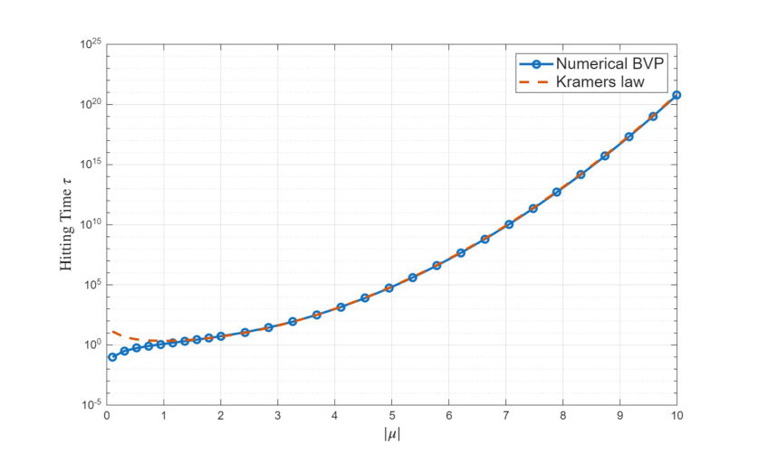
<figcaption class="paper-figure-caption"><b>Fig 1.</b> Figure 2: Mean first passage time for the subcritical reduced pitchfork model in Equa- tion (3.3). Starting from the stable equilibrium q = 0, the first passage time measures the average time required for a trajectory to reach either unstable threshold q = ±√−µ and leave the local stable region. The solid curve shows the mean first passage time obtained by numerically solving the backward boundary-value problem derived in Appendix A. The dashed curve shows the Eyring–Kramers approximation [26, 27], multiplied by an empirical factor C = 0.6 to improve the comparison over the finite parameter range shown.</figcaption>
</figure>
<figure class="paper-figure-card">
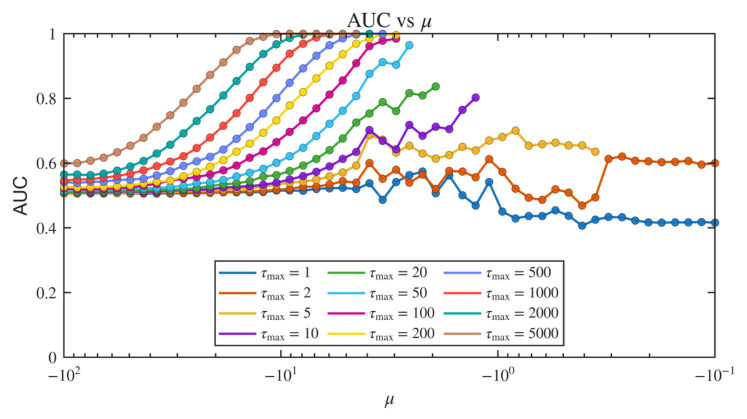
<figcaption class="paper-figure-caption"><b>Fig 2.</b> Figure 3: Area under the ROC curve (AUC) as a function of parameter µ for the different observation horizons τmax. An AUC value of 0.5 indicates the classification method is as good as flipping a coin; an AUC value of 1 indicates potential for a perfect classification. µ indicates closeness to the bifurcation point located at µ = 0. A value of µ is shown only if at least 10% of the subcritical realizations remain within the local regime for the full observation horizon (Section 3.2); curves for longer horizons therefore end farther from the bifurcation. Some corresponding ROC-curves are shown in Figure 4.</figcaption>
</figure>
<figure class="paper-figure-card">
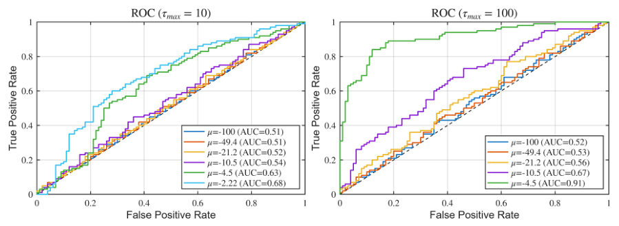
<figcaption class="paper-figure-caption"><b>Fig 3.</b> Figure 4: Receiver operating characteristic (ROC) curves for the stochastic pitchfork model in Equation (3.3) at observation horizons τmax = 10 (left) and τmax = 100 (right). Each curve corresponds to a different value of µ and is constructed from the fitted values of ˆs. The horizontal axis gives the false-positive rate and the vertical axis the true-positive rate, with the subcritical case (s = 1) taken as the positive class. The diagonal line denotes chance-level discrimination (i.e. flipping a coin).</figcaption>
</figure>
<figure class="paper-figure-card">
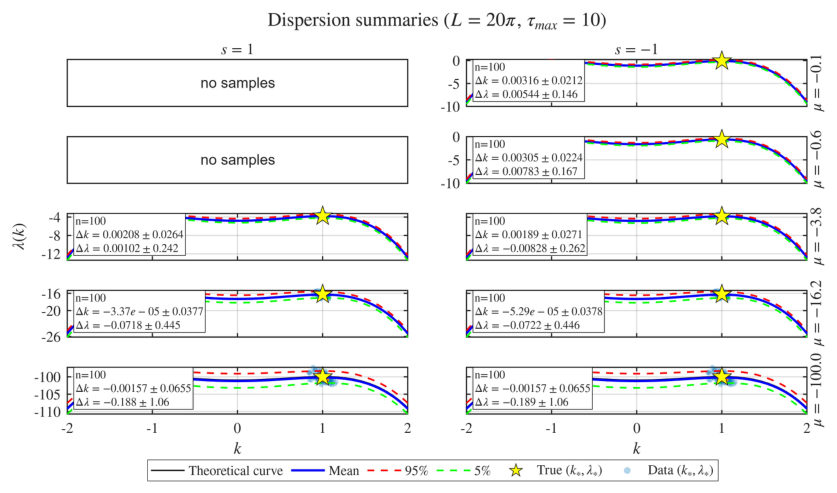
<figcaption class="paper-figure-caption"><b>Fig 4.</b> Figure 5: Representative fitted dispersion relations for the stochastic Swift–Hohenberg model at γ = 1 and observation horizon τmax = 10. Each panel corresponds to a fixed combination of µ and s. The black curve shows the theoretical dispersion relation, the blue curve the ensemble mean of the fitted relations, and the dashed curves the 5th and 95th percentiles. Blue points denote the fitted maxima (ˆk∗, ˆλ∗) of the individual realizations, while the yellow star denotes the theoretical maximum (k∗, λ∗) = (1, µ). The text box reports the number of available realizations and summary statistics for ∆k = ˆk∗−k∗and ∆λ = ˆλ∗−λ∗, following [21].</figcaption>
</figure>
<figure class="paper-figure-card">
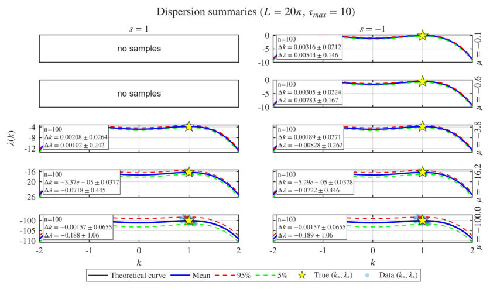
<figcaption class="paper-figure-caption"><b>Fig 5.</b> Figure 6 shows the AUC for bifurcation criticality classification as a function of the distance to the bifurcation, µ, and the observation horizon, τmax, at fixed γ = 1. For a fixed observation horizon, the AUC generally increases as µ approaches zero, showing that the nonlinear coefficient becomes easier to distinguish closer to the bifurcation. At the same time, for a fixed value of µ, longer observation horizons lead to higher AUC values. Hence, as in the stochastic pitchfork model, a longer observation time allows the bifurcation type to be predicted farther away from the bifurcation point.</figcaption>
</figure>
</div>

<p><strong>Summary.</strong> This work develops a method to classify whether a system approaches a bifurcation in a supercritical or subcritical manner using noisy time-series data. By estimating the sign of the cubic nonlinear term from the dynamics, the authors show that this distinction is possible, provided the observation window is carefully chosen to balance information gathering against noise-induced tipping risks.</p>
<p><strong>Why it may be interesting.</strong> The techniques developed for analyzing critical slowing down and bifurcation type identification in noisy, non-equilibrium systems are highly relevant to understanding phase transitions and pattern formation in complex physical systems.</p>
<details>
<summary>Detailed structure</summary>
<p><strong>Main problem.</strong> The paper addresses the challenge of distinguishing between supercritical and subcritical bifurcations from noisy, pre-transition observations, as standard early-warning methods only signal instability onset.</p>
<p><strong>Main result.</strong> The distinction can be reliably made by estimating the sign of the leading cubic nonlinear term ($s$) from the dynamics, although this method requires balancing information gain against the increased risk of noise-induced tipping in the subcritical case.</p>
<p><strong>Method.</strong> The authors extend regression-based stability methods by incorporating the leading cubic nonlinear term into the normal form of the dynamics, analyzing both non-spatial and spatially extended systems.</p>
<p><strong>Model / system.</strong> The investigation uses the stochastic pitchfork model ($rac{du}{dt} = \mu u + s u^3$) and the stochastic Swift-Hohenberg equation as test cases for pattern-forming systems near an instability.</p>
<p><strong>Key observables.</strong> Estimated cubic coefficient ($\hat{s}$), linear stability parameter ($\hat{\mu}$), and the mean first passage time ($T(q)$) for exit time analysis.</p>
<p><strong>Important parameters / regimes.</strong> Observation horizon ($  au_{\max}$), proximity to bifurcation ($\mu$), noise strength ($\sigma$), and the spatial wave number ($k^*$).</p>
<p><strong>Assumptions / limitations.</strong> The method assumes that the local dynamics can be accurately approximated by a minimal normal form containing linear and cubic nonlinear terms, and that the regression fits the deterministic drift while treating noise as a residual.</p>
<p><strong>Figures summary.</strong> Figures show schematic comparisons of noisy trajectories, distributions of estimated coefficients ($\hat{s}$) for varying observation times, and how the Area Under the Curve (AUC) for classification improves with longer observation horizons or larger spatial fields.</p>
<p><strong>Paper structure.</strong> The paper first establishes the need for bifurcation type classification. It then details the regression-based method for both non-spatial (pitchfork) and spatially extended (Swift-Hohenberg) systems. Finally, it analyzes the performance dependence on observation time, noise, and spatial field size.</p>
</details>
<details>
<summary>Abstract</summary>
<p>Early-warning methods can indicate that a system is approaching a loss of stability, but they do not usually reveal whether the approaching bifurcation is supercritical or subcritical. We investigate whether this distinction can be made from noisy pre-transition observations. For this investigation, we extend a regression-based stability method by including the leading cubic nonlinear term, whose sign is used to predict the bifurcation type. We test the method on a stochastic pitchfork model and a spatial stochastic Swift-Hohenberg equation. In both models, classification improves with longer observation horizons, closer proximity to the bifurcation, stronger noise, and larger nonlinear effects. However, these conditions are also linked to a higher risk of noise-induced tipping in the subcritical case. The useful early-warning window is therefore determined by a balance between obtaining enough information to identify the bifurcation type and doing so before noise-induced tipping becomes too likely. In spatially extended systems, we find that observing the full spatial field allows classification over shorter observation horizons, and performance improves when a broader range of spatial modes contributes to the observed dynamics. Altogether, we identify the conditions under which the method can reliably distinguish between supercritical and subcritical bifurcations.</p>
</details>
<p><sub><a href="#top">↑ back to top</a></sub></p>

<p><a id="paper-2610.40217"></a></p>
<h3 id="wave-turbulence-of-capillary-waves-in-finite-systems"><a href="http://arxiv.org/abs/2610.40217v1">Wave Turbulence of Capillary Waves in Finite Systems</a></h3>
<p><strong>Authors:</strong> Alexander O. Korotkevich<br>
<strong>Type:</strong> both · <strong>Category:</strong> statistical mechanics · <strong>PDF:</strong> <a href="https://arxiv.org/pdf/2610.40217v1">https://arxiv.org/pdf/2610.40217v1</a><br>
<strong>Analysis basis:</strong> full PDF text, analyzed in chunks
<strong>Topic relevance:</strong> <code>non-equilibrium universality</code> <strong>3/5</strong> · <code>analog quantum simulation</code> <strong>2/5</strong> · <code>Keldysh / 2PI / non-Gaussian methods</code> <strong>1/5</strong> · <code>driven-dissipative phase transition</code> <strong>1/5</strong> · <code>methods for driven-dissipative</code> <strong>1/5</strong></p>
<div class="figure-strip-hint">↔ Scroll figures horizontally</div>
<div class="paper-figures-scroll">
<figure class="paper-figure-card">
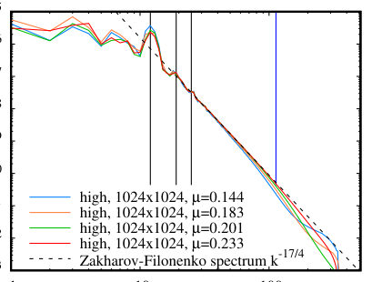
<figcaption class="paper-figure-caption"><b>Fig 1.</b> FIG. 1. Case “high”. Angle averaged and normalized |ak|2 after av- eraging over time in dynamic equilibrium. Resolution 1024×1024. To the right of the vertical blue line k &gt; kd/3 harmonics are affected by the dissipation through second and third harmonics reaching dis- sipation region. Vertical black lines show spectral peak kp = 12 (maximum of isotropic pumping), the first 22/3kp and the second 32/3kp resonant merging of harmonics from the pumping ring. KZ- spectrum is clearly visible for highest steepness and its dynamic range is shrinking with decrease of average steepness µ.</figcaption>
</figure>
<figure class="paper-figure-card">
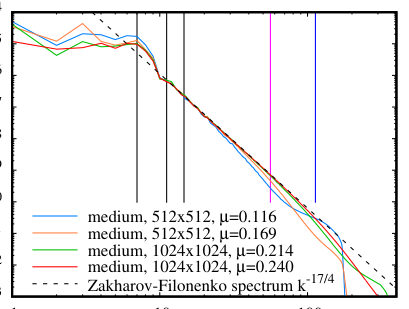
<figcaption class="paper-figure-caption"><b>Fig 2.</b> FIG. 2. Case “medium”. Angle averaged and normalized |ak|2 af- ter averaging over time in dynamic equilibrium. Resolutions were 512 × 512 for lower and 1024 × 1024 for higher steepness. To the right of the vertical blue line k &gt; kd/3 for resolution 1024 × 1024 harmonics are affected by the dissipation through second and third harmonics reaching dissipation region. To the right of vertical ma- genta line the same is true for 512 × 512 grid. Vertical black lines show spectral peak kp = 7 (maximum of isotropic pumping), the first 22/3kp and the second 32/3kp resonant merging of harmonics from the pumping ring. It is clear that the dynamic range of KZ-spectrum is extending further than magenta...</figcaption>
</figure>
<figure class="paper-figure-card">
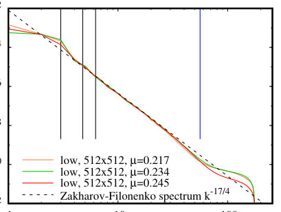
<figcaption class="paper-figure-caption"><b>Fig 3.</b> FIG. 3. Case “low”. Angle averaged and normalized |ak|2 after av- eraging over time in dynamic equilibrium. Resolution 512×512. To the right of the vertical blue line k &gt; kd/3 harmonics are affected by the dissipation through second and third harmonics reaching dissi- pation region. Vertical black lines show spectral peak kp = 3 (max- imum of isotropic pumping), the first 22/3kp and the second 32/3kp resonant merging of harmonics from the pumping ring. The dynamic range of KZ-spectrum is wide even in this case and clearly depends on average steepness µ.</figcaption>
</figure>
<figure class="paper-figure-card">
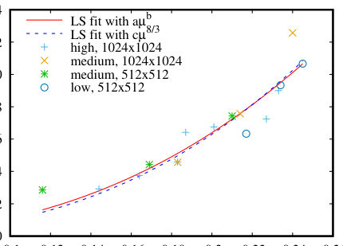
<figcaption class="paper-figure-caption"><b>Fig 4.</b> FIG. 4. Scaling of dynamic range kc/kp vs average steepness µ. Red line is least squares fit with a function aµb. Optimal power is b = 2.51 ± 0.31. Dashed blue line is a result of the least squares fit with a predicted scaling cµ8/3.</figcaption>
</figure>
<figure class="paper-figure-card">
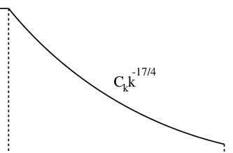
<figcaption class="paper-figure-caption"><b>Fig 5.</b> FIG. 5. Model spectrum used in derivation of (5).</figcaption>
</figure>
</div>

<p><strong>Summary.</strong> This work numerically investigates wave turbulence in capillary waves, focusing on the finite dynamic range of the Zakharov-Filonenko spectrum. The authors confirm that this dynamic range scales robustly with the nonlinearity parameter ($\mu$) as $\mu^{8/3}$. This provides a quantitative understanding of how nonlinearity limits energy cascade in finite physical systems.</p>
<p><strong>Why it may be interesting.</strong> The study of wave turbulence and the scaling laws derived from the WKE provide insights into non-equilibrium energy cascades, which share mathematical parallels with energy transport in complex quantum many-body systems or driven-dissipative quantum optical systems.</p>
<details>
<summary>Detailed structure</summary>
<p><strong>Main problem.</strong> The paper investigates the wave turbulence of capillary waves in finite systems, specifically determining how the dynamic range of the Zakharov-Filonenko spectrum scales with the system's nonlinearity.</p>
<p><strong>Main result.</strong> The dynamic range of the spectrum scales with the average steepness ($\mu$) according to the relationship $k_c/k_p \propto \mu^{8/3}$, which is confirmed by numerical simulations.</p>
<p><strong>Method.</strong> The study uses numerical simulations based on the Hamiltonian dynamics of capillary waves, analyzing the time-averaged energy spectrum to identify the inertial range and its boundaries.</p>
<p><strong>Model / system.</strong> The system is capillary waves on deep water, modeled by a weakly nonlinear expansion of the full Hamiltonian. The dynamics are governed by the Wave Kinetic Equation (WKE) derived from the coupled equations for surface elevation and velocity potential.</p>
<p><strong>Key observables.</strong> Zakharov-Filonenko (ZF) spectrum, the dynamic range ($k_c/k_p$), and the average steepness ($\mu = \langle|
abla\eta|^2
angle$).</p>
<p><strong>Important parameters / regimes.</strong> Average steepness ($\mu$), pumping wavenumber ($k_p$), and the dissipation scale ($k_d$).</p>
<p><strong>Assumptions / limitations.</strong> The analysis assumes that the nonlinearity parameter $\mu$ is small, allowing the use of the WKE, and that the turbulence is isotropic.</p>
<p><strong>Figures summary.</strong> Figures illustrate the time-averaged, normalized energy spectra for different pumping regimes, showing the characteristic KZ spectrum and the shrinking dynamic range as $\mu$ decreases. Figure 4 specifically plots the scaling of the dynamic range versus $\mu$.</p>
<p><strong>Paper structure.</strong> The paper establishes the physical model and the WKE, then presents numerical simulations across various pumping strengths and nonlinearity levels. The core of the work is fitting the observed scaling of the dynamic range ($k_c/k_p$) against $\mu$ to confirm the theoretical $\mu^{8/3}$ dependence.</p>
</details>
<details>
<summary>Abstract</summary>
<p>We consider classical problem of turbulence of capillary waves. In a series of numerical simulations it is shown that Zakharov-Filonenko spectrum corresponding to direct cascade of energy has a limited dynamic range of realization in a finite system, which shrinks with decreasing level of nonlinearity. Recent hypothesis that this dynamic range scales with average steepness as $\simμ^{8/3}$ is confirmed. As a byproduct the Zakharov-Filonenko spectrum was observed for record dynamic range close to or beyond one decade in a variety of simulation configurations.</p>
</details>
<p><sub><a href="#top">↑ back to top</a></sub></p>

<p><a id="paper-2610.39074"></a></p>
<h3 id="hera-assessing-an-autonomous-agent-for-quantum-device-measurement"><a href="http://arxiv.org/abs/2610.39074v1">HERA: Assessing an Autonomous Agent for Quantum Device Measurement</a></h3>
<p><strong>Authors:</strong> Zachary W. Gomez, Nathan Bittner, Jordan T. McCourt, Qingrui Cao, Sandesh S. Kalantre, Benjamin H. Alexander, Zhiren Zheng, Kenji Watanabe, Takashi Taniguchi, Aaron Sharpe<br>
<strong>Type:</strong> both · <strong>Category:</strong> other · <strong>PDF:</strong> <a href="https://arxiv.org/pdf/2610.39074v1">https://arxiv.org/pdf/2610.39074v1</a><br>
<strong>Analysis basis:</strong> full PDF text, analyzed in chunks
<strong>Topic relevance:</strong> <code>quantum measurements</code> <strong>3/5</strong> · <code>QC/QI experiment</code> <strong>2/5</strong> · <code>analog quantum simulation</code> <strong>1/5</strong> · <code>methods for driven-dissipative</code> <strong>1/5</strong></p>
<div class="figure-strip-hint">↔ Scroll figures horizontally</div>
<div class="paper-figures-scroll">
<figure class="paper-figure-card">
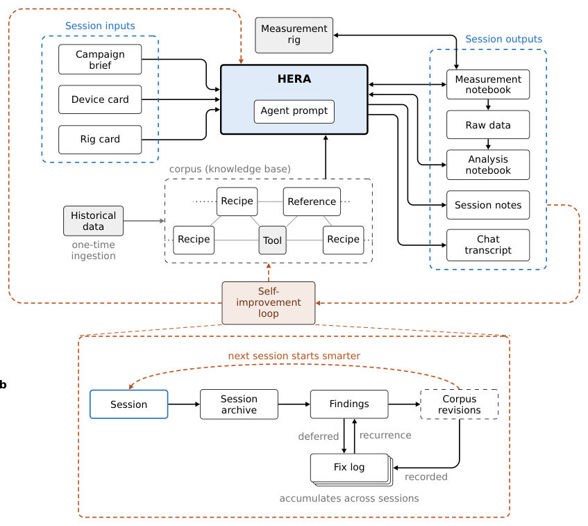
<figcaption class="paper-figure-caption"><b>Fig 1.</b> FIG. 1. HERA. (a) HERA is an LLM agent designed to conduct autonomous cryogenic transport measurements on quantum devices. The agent prompt holds the standing instructions HERA follows in every measurement session. A session starts from its inputs: a campaign brief, a device card, and a rig card. The brief states the campaign’s goals. The cards are machine- readable datasheets for the device being measured and the rig measuring it. HERA draws on a corpus of recipes, software tools, and literature references. A recipe outlines an experimental protocol and points to the examples, tools, and related recipes. The corpus was seeded from the lab’s historical data. HERA writes code into two...</figcaption>
</figure>
<figure class="paper-figure-card">
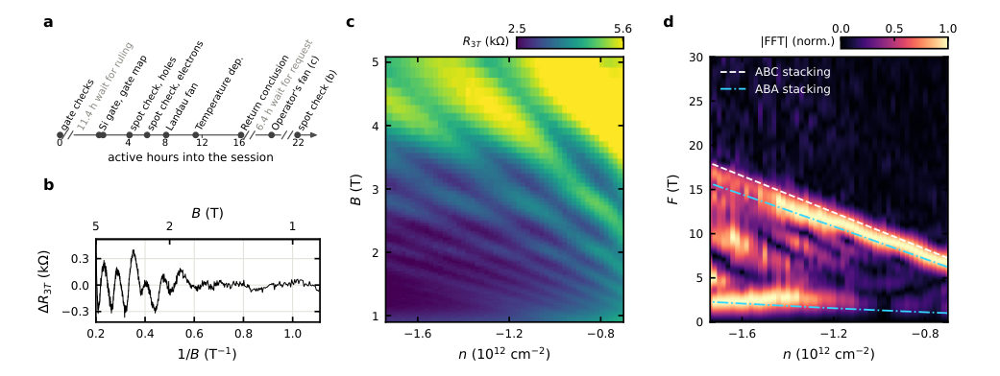
<figcaption class="paper-figure-caption"><b>Fig 2.</b> FIG. 2. HERA’s measurement sequence for stacking order (a) Timeline of HERA’s session on the trilayer device, from the brief to the spot check in (b), in active hours. The first break in the axis excludes an 11.4 h wait for the operator’s ruling on a safety concern HERA raised. The second break excludes the 6.4 h between HERA’s conclusion and the operator’s request for the fan in (c). (b) Background-subtracted three-terminal resistance ∆R3T as a function of inverse magnetic field 1/B at carrier density n = −1.74 × 1012 cm−2 and displacement field D = 0. In this spot check, ∆R3T exhibits Shubnikov–de Haas (SdH) oscillations, which are used to discriminate between stacking orders (Sec. S3)....</figcaption>
</figure>
<figure class="paper-figure-card">
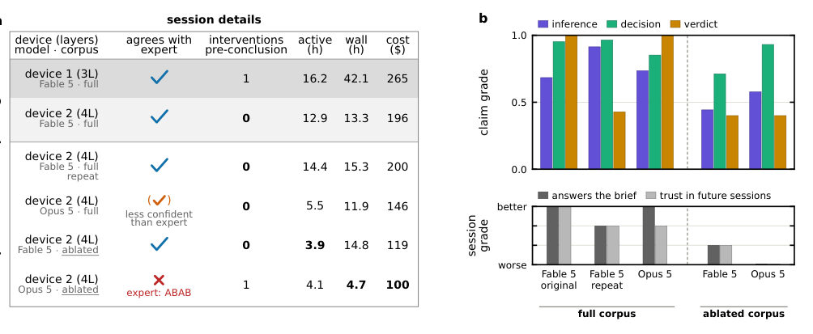
<figcaption class="paper-figure-caption"><b>Fig 3.</b> FIG. 3. Live sessions with the full and ablated corpus. (a) The six live sessions asked to determine the stacking order of a multilayer graphene device. The two shaded sessions are the blinded prospective trial (Sec. III). The four unshaded sessions are the ablation study (Sec. IV). The ablated corpus kept only the software tools of the full corpus. Columns show agreement with the expert’s sealed conclusion, operator interventions before the conclusion, active and wall-clock time, and cost at API list prices (Methods). Bold indicates the best value in each column. The interventions for all sessions are listed in Sec. S5. (b) Expert grades of the five tetralayer sessions. Top, the mean grade...</figcaption>
</figure>
<figure class="paper-figure-card">
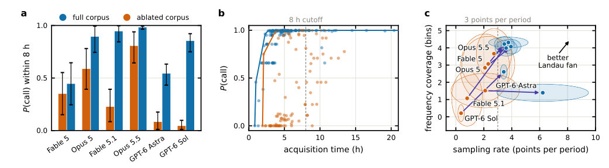
<figcaption class="paper-figure-caption"><b>Fig 4.</b> FIG. 4. Offline replay of Landau fan design. (a) P(call) for six models, each designing up to twenty fans with the full corpus and up to twenty with the ablated corpus (Methods). P(call) estimates whether a fan would discriminate between multilayer graphene stacking orders. A fan planned to run longer than an eight-hour cutoff counts as zero. Bars show each model’s mean with a 95% bootstrap interval. (b) P(call) of all fans as a function of their planned acquisition time. Lines mark the Pareto frontiers of the fans with the full and the ablated corpus. A fan is on the frontier when no other fan in its group scores higher in less time. The dashed line indicates the eight-hour cutoff applied...</figcaption>
</figure>
<figure class="paper-figure-card">
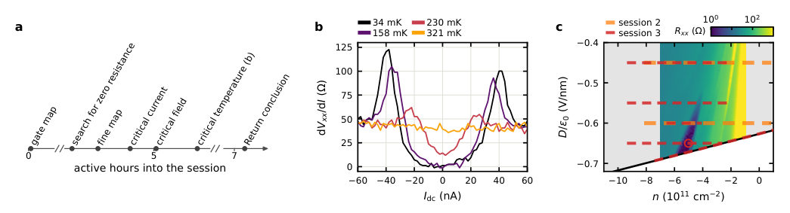
<figcaption class="paper-figure-caption"><b>Fig 5.</b> FIG. 5. HERA’s search for superconductivity. (a) Timeline of session 6 on the WSe2-proximitized bilayer graphene device, from the grant of autonomy to HERA’s conclusion, in active hours. (b) Differential resistance dVxx/dI as a function of dc current Idc at four temperatures, acquired autonomously by HERA in the session in (a). (c) Longitudinal resistance Rxx as a function of n and D/ϵ0, measured in the additional session that HERA ran with the operator in the loop (Sec. S7). The diagonal black line denotes the boundary of the accessible gate range. Grey regions denote accessible regions of gate space outside the measured map. Dashed lines denote the cuts along which session 2 (orange) and...</figcaption>
</figure>
</div>

<p><strong>Summary.</strong> This paper introduces HERA, an autonomous AI agent designed to conduct complex, multi-step quantum device measurements in a cryogenic lab setting. By integrating a curated knowledge base, HERA was tested on determining graphene stacking order and finding superconductivity in new materials. The results show that LLM agents can perform sound, expert-level experimental science when properly scaffolded with domain knowledge.</p>
<p><strong>Why it may be interesting.</strong> While the physics is condensed matter, the core contribution is the methodology—using LLMs to perform structured, verifiable scientific reasoning in a physical measurement context—which is highly relevant for future automated quantum characterization.</p>
<details>
<summary>Detailed structure</summary>
<p><strong>Main problem.</strong> The paper addresses the challenge of automating complex, multi-step experimental science, specifically cryogenic transport measurements on quantum devices, using autonomous AI agents.</p>
<p><strong>Main result.</strong> The developed agent, HERA, successfully replicated expert conclusions in blinded trials for determining graphene stacking order and characterizing superconductivity in novel materials, demonstrating sound experimental capability when provided with a curated knowledge base.</p>
<p><strong>Method.</strong> The authors designed and tested HERA, an autonomous agent that uses a structured knowledge base (corpus) to write and execute code in live Jupyter notebooks for measurement and analysis, mimicking the scientific workflow.</p>
<p><strong>Model / system.</strong> The experiments are performed on atomically thin quantum devices, such as multilayer graphene and WSe2-proximitized bilayer graphene, measured under cryogenic conditions. The core 'model' is the HERA LLM agent, which interacts with the physical measurement setup and the curated scientific knowledge base.</p>
<p><strong>Key observables.</strong> Shubnikov–de Haas (SdH) oscillation frequencies, carrier mass, critical current ($I_c$), superconducting transition temperature ($T_c$), and coherence length ($\xi_{GL}$).</p>
<p><strong>Important parameters / regimes.</strong> Carrier density ($n$), magnetic field ($B$), temperature ($T$), and displacement field ($D/\epsilon_0$).</p>
<p><strong>Assumptions / limitations.</strong> The agent's performance is highly dependent on the quality, completeness, and structure of the human-curated knowledge base (corpus).</p>
<p><strong>Figures summary.</strong> Figures illustrate HERA's architecture, measurement sequences for stacking order (showing $R$ vs $1/B$), and superconducting characterization plots ($R_{xx}$ vs $n$, $dV/dI$ vs $B$). Tables quantify agreement between HERA's conclusions and expert judgments.</p>
<p><strong>Paper structure.</strong> The paper introduces HERA, details its components (knowledge base, notebooks), presents results from blinded prospective trials (stacking order), and then extends the assessment to a new physical problem (superconductivity) using multiple measurement sessions.</p>
</details>
<details>
<summary>Abstract</summary>
<p>Large language model agents have begun to carry out laboratory measurements, but their scientific conclusions are useful only if they hold up under scrutiny. Demonstrating this requires controlled studies because models are stochastic and the context a model is given steers its conclusions. Here we introduce HERA, an autonomous agent designed to carry out cryogenic transport measurements of quantum devices. HERA draws on a knowledge base curated by lab members that holds measurement protocols, software tools, and literature references. We assessed HERA with a blinded trial against an expert on the stacking order of two multilayer graphene devices, an ablation of its knowledge base, and hundreds of offline replays in which models designed the trial's central measurement without running it. HERA's conclusions matched the expert's sealed conclusions on both tested devices. The ablation and the replay studies measured the impact of the knowledge base across different models, showing that with it every model designed better measurements and reasoned more soundly. To test how readily HERA extends to a new problem, we tasked it with finding and characterizing superconductivity in a different material system. This required a few hours of expert time to develop a new experimental protocol, after which HERA did both autonomously. These results show that, with a knowledge base designed for the task, language model agents are capable of sound experimental science.</p>
</details>
<p><sub><a href="#top">↑ back to top</a></sub></p>

<p><a id="paper-2610.40083"></a></p>
<h3 id="magnetotransport-experiments-on-side-contacted-topological-insulator-three-terminal-josephson-junctions"><a href="http://arxiv.org/abs/2610.40083v1">Magnetotransport experiments on side-contacted topological insulator three-terminal Josephson junctions</a></h3>
<p><strong>Authors:</strong> Christoph Wassmer, Ella Nikodem, Oliver Breunig, Yongjian Wang, Yoichi Ando, Jakob Schluck<br>
<strong>Type:</strong> experiment · <strong>Category:</strong> other · <strong>PDF:</strong> <a href="https://arxiv.org/pdf/2610.40083v1">https://arxiv.org/pdf/2610.40083v1</a><br>
<strong>Analysis basis:</strong> full PDF text, analyzed in chunks
<strong>Topic relevance:</strong> <code>QC/QI experiment</code> <strong>3/5</strong> · <code>Keldysh / 2PI / non-Gaussian methods</code> <strong>1/5</strong> · <code>analog quantum simulation</code> <strong>1/5</strong> · <code>interference shaping light</code> <strong>1/5</strong> · <code>quantum measurements</code> <strong>1/5</strong></p>
<div class="figure-strip-hint">↔ Scroll figures horizontally</div>
<div class="paper-figures-scroll">
<figure class="paper-figure-card">
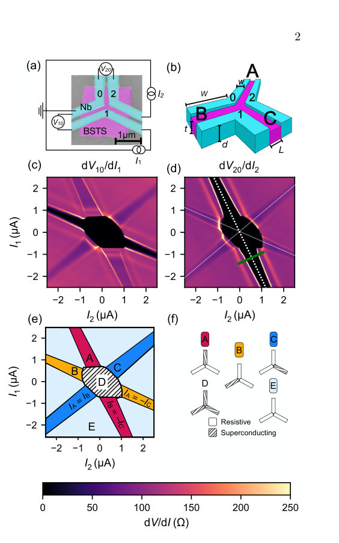
<figcaption class="paper-figure-caption"><b>Fig 1.</b> FIG. 1. Side-contacted BSTS-Nb trijunction. (a) SEM image and measurement configuration. Terminals 1 and 2 are current-biased while terminal 0 is electrically grounded. Si substrate with 300 nm SiO2, Si back gate not shown in sketch. (b) Schematic 3D view, three superconducting Nb- leads (turquoise) of height d are connected by a central TI island of thickness t (pink). (c) Bias map showing dV10/dI1 in bias space I1,2. (d) Bias map showing dV20/dI2 in bias space I1,2 including visual guides. White dashed lines indicate bias configurations for which the respective junction carries zero current. Measurement cut used in Sec. III highlighted in dark green. (e,f) Illustration of the different...</figcaption>
</figure>
<figure class="paper-figure-card">
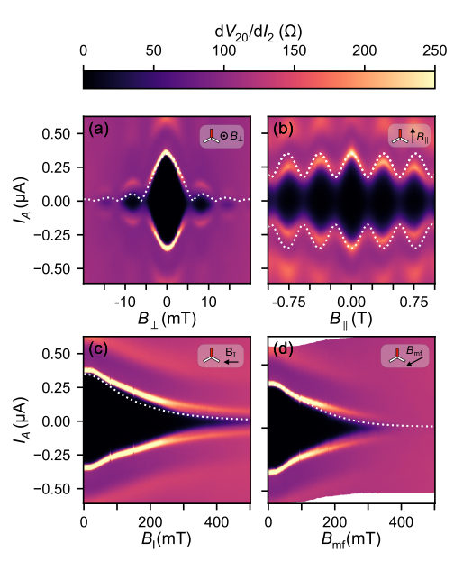
<figcaption class="paper-figure-caption"><b>Fig 2.</b> FIG. 2. Magnetic-field response of isolated junction A. Data are measured along the dark green line shown in Fig. 1(d), insets indicate the applied field direction and highlight the measured junction (A) in red. The white dashed lines show the result of a semiclassical calculation of the critical current for a single junction in magnetic field. (a) Fraunhofer pattern in dV /dI as a function of out-of-plane field. The field is al- ways swept starting from zero. (b) SQUID pattern in dV /dI as a function of in-plane field applied along junction A, across direction of current flow. (c) Decaying pattern in dV /dI as a function of in-plane field applied across junction A, along di- rection of...</figcaption>
</figure>
<figure class="paper-figure-card">
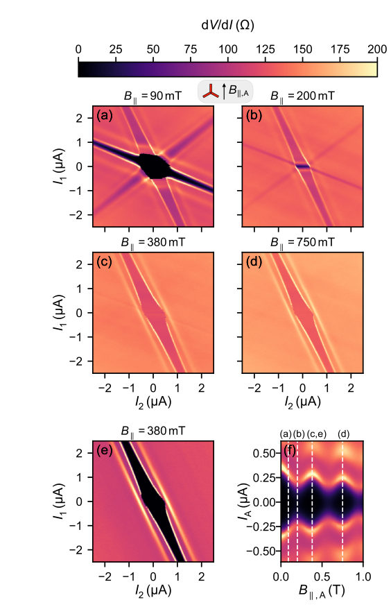
<figcaption class="paper-figure-caption"><b>Fig 3.</b> FIG. 3. Three-terminal response to B∥,A. Inset shows field working points in relation to SQUID pattern of Fig. 2(b). Panels (a–d) show dV10/dI1, (e–f) show dV20/dI2. (a) Ic reduction slowly setting in, shape of CCC slightly affected. (b) Zero-resistance features of B and C nearly vanished, A at oscillation minimum. (c) Junction A nearly fully recovered at maximum of first SQUID lobe. (d) Simultaneous SQUID oscillation on all junctions. Features of B and C are not visi- ble because of the BI contribution. (e) dV20/dI2 at B∥=380 mT, showing that junction A is still superconducting, but the CCC has vanished. (f) Nano-SQUID pattern of junction A with white dashed lines indicating the...</figcaption>
</figure>
<figure class="paper-figure-card">

<figcaption class="paper-figure-caption"><b>Fig 4.</b> FIG. 4. Three-terminal response of device 2 to small B⊥, showing a cyclic deformation of the CCC. While the indi- vidual critical currents of the junctions remain largely unaf- fected, an imposed phase condition between terminals leads to deformations of the CCC. (a) Zero-field bias map. (b) The deformation sets in on the left half of the contour, extends to the right half (c), and is strongest at 800 µT (d), where the contour becomes non-convex and diamond-shaped. It then relaxes, again first on the left half (e). (f) At 1900 µT, the CCC is restored in a shape similar to, but smaller than, the zero-field case, resulting from an overall reduced Ic.</figcaption>
</figure>
<figure class="paper-figure-card">

<figcaption class="paper-figure-caption"><b>Fig 5.</b> FIG. 6. Electrical gating behavior of the trijunction. Gate voltage applied via a global back gate. Insets indicate the measured junction in red. (a) Gate-dependent normal state resistance dV01/dI0. (b,d,f) Ic versus Vg behavior of junc- tion A (b), junction B (d) and junction C (f) measured along line cuts comparable to the ones used in Fig. 2. (c,e) Full two-dimensional bias characterization at (c) Vg = 40 V and (e) Vg = −40 V, dV01/dI0 measured in a different grounding configuration (terminal 1 grounded, cf. Fig. S1(c,d)).</figcaption>
</figure>
</div>

<p><strong>Summary.</strong> This work experimentally characterizes the magnetotransport of a three-terminal Josephson junction fabricated on a topological insulator. By measuring the critical current contours and single-junction responses under applied magnetic fields, the authors confirm the device's superconducting nature. The results provide a foundational platform for future research aiming to observe Majorana zero modes.</p>
<p><strong>Why it may be interesting.</strong> The study provides experimental validation of superconducting phenomena in topological materials, which is crucial for realizing topological quantum computing elements, bridging condensed matter physics with quantum information.</p>
<details>
<summary>Detailed structure</summary>
<p><strong>Main problem.</strong> The study investigates the magnetotransport properties of a three-terminal Josephson junction built on a topological insulator (TI) to characterize its superconducting state and search for signatures of Majorana zero modes (MZMs).</p>
<p><strong>Main result.</strong> The experiment successfully measured characteristic trijunction transport features, including the Critical Current Contour (CCC) deformation under magnetic fields, and confirmed the single-junction response using semiclassical models.</p>
<p><strong>Method.</strong> Transport measurements were performed using lock-in techniques on the TI junction, varying bias currents and applying external magnetic fields in different orientations.</p>
<p><strong>Model / system.</strong> The physical system is a side-contacted TI trijunction connected to superconducting leads. The analysis employs the Resistively Shunted Junction (RCSJ) model and semiclassical trajectory simulations to interpret the measured supercurrents.</p>
<p><strong>Key observables.</strong> Differential resistance maps (dV/dI), Critical Current Contours (CCC), Fraunhofer interference patterns, and SQUID oscillations.</p>
<p><strong>Important parameters / regimes.</strong> Applied magnetic fields ($B_{\perp}, B_{\parallel}$), bias currents ($I_1, I_2$), and junction geometry parameters.</p>
<p><strong>Assumptions / limitations.</strong> The analysis assumes that the observed transport features can be modeled by considering the topological surface states and that the collective behavior can be understood by summing individual junction responses.</p>
<p><strong>Figures summary.</strong> Figures show SEM images, 3D schematics, 2D bias maps illustrating transport regimes (A-E), and detailed plots showing the magnetic field dependence of the critical current for isolated junctions (Fraunhofer, SQUID).</p>
<p><strong>Paper structure.</strong> The paper progresses from establishing the general trijunction transport features (CCC, resistive regimes) to isolating the response of individual junctions under various magnetic field orientations, and finally comparing these measurements against semiclassical simulations.</p>
</details>
<details>
<summary>Abstract</summary>
<p>Multiterminal Josephson junctions have recently attracted substantial attention. The ability to study Andreev bound states in a multi-phase parameter space opens up exciting avenues for generating topologically non-trivial phases in superconducting devices. A particularly interesting case is the trijunction based on a topological insulator (TI), which is predicted to host Majorana zero modes for suitable phase configurations (Fu and Kane, PRL 2008). Here we turn to the platform of the side-contacted TI trijunction and present experimental evidence for a multiterminal Josephson effect. We study the transport properties and find typical features of a two-dimensional critical current contour (CCC) as well as bias regimes in which only a single junction remains dissipationless. We pay particular attention to these features and study the effects of magnetic fields on single junctions within the trijunction, where, depending on the field direction, the supercurrents show Fraunhofer patterns, SQUID oscillations, or a monotonic decay. We find good agreement with semiclassical simulations for a single TI junction that take into account the top and bottom surface states. We observe pronounced non-convex shape deformations of the CCC under perpendicular magnetic fields that reflect the flux buildup in the loop formed by our trijunctions and provide a simple model sufficient to explain the observed effect. Our results provide the foundations for future studies of Majorana zero modes on this platform.</p>
</details>
<p><sub><a href="#top">↑ back to top</a></sub></p>

<p><a id="paper-2610.40104"></a></p>
<h3 id="continuous-tuning-of-quantum-critical-behavior-in-hybrid-josephson-junction-arrays"><a href="http://arxiv.org/abs/2610.40104v1">Continuous tuning of quantum critical behavior in hybrid Josephson junction arrays</a></h3>
<p><strong>Authors:</strong> E. Fugl, L. L. Olsen, S. Sasmal, M. Efthymiou-Tsironi, G. Nagda, F. Krizek, L. Casparis, S. Vaitiekėnas<br>
<strong>Type:</strong> experiment · <strong>Category:</strong> other · <strong>PDF:</strong> <a href="https://arxiv.org/pdf/2610.40104v1">https://arxiv.org/pdf/2610.40104v1</a><br>
<strong>Analysis basis:</strong> full PDF text, analyzed in chunks
<strong>Topic relevance:</strong> <code>non-equilibrium universality</code> <strong>3/5</strong> · <code>analog quantum simulation</code> <strong>2/5</strong> · <code>driven-dissipative phase transition</code> <strong>1/5</strong></p>
<div class="figure-strip-hint">↔ Scroll figures horizontally</div>
<div class="paper-figures-scroll">
<figure class="paper-figure-card">

<figcaption class="paper-figure-caption"><b>Fig 1.</b> FIG. 2. (a) Traces of ρ as a function of VFG taken between 30 and 300 mK at fixed VTG = −0.2 V, showing a crossing at ρC ≈5.8ρQ with a pronounced separation of isotherms on either side, indicating a superconductor-to-insulator tran- sition (SIT). (b) Similar to (a), but varying VTG at fixed VFG = −0.71 V, with a crossing near ρQ and pronounced tem- perature dependence on either side, characteristic of another SIT. (c) Same as (b) at VFG = −0.6 V, where the crossing occurs around 0.5ρQ, with a much weaker temperature de- pendence on the metallic side, indicating a superconductor- to-metal transition (SMT).</figcaption>
</figure>
<figure class="paper-figure-card">

<figcaption class="paper-figure-caption"><b>Fig 2.</b> FIG. 1. (a) Colorized scanning electron micrograph of a ref- erence device, before depositing the top gate. The semicon- ductor is shown in green, Al islands in gray, and the frame gate in yellow. (b) Schematic cross-section along the dashed black line in (a), illustrating the position of the two gate layers relative to the Josephson junctions. The frame-gate voltage (VFG) controls the central part of the junctions, while the top- gate voltage (VTG) tunes the semiconductor surrounding the islands. (c) Resistivity, ρ, of the array measured as a function of VFG and VTG, showing superconducting, insulating, and metallic transport regimes. Arrows indicate the gate-voltage trajectories examined...</figcaption>
</figure>
<figure class="paper-figure-card">

<figcaption class="paper-figure-caption"><b>Fig 3.</b> FIG. 3. Evolution of the scaling exponent α and crit- ical resistivity ρC across the gate-voltage phase diagram. (a) and (b) Critical parameters extracted from frame-gate- driven SITs at different fixed top-gate voltages, VTG, show- ing a gradual decrease in both quantities toward the triple point. (c) and (d) Corresponding parameters for top-gate- driven SITs and SMTs at different fixed frame-gate voltages, VFG, showing a further decrease toward the metallic regime. Dashed horizontal lines indicate the classical- and quantum- percolation estimates for α and the Cooper-pair resistance quantum ρQ = h/4e2. Insets show the power-law temperature dependence of the isotherm slopes, yielding α =...</figcaption>
</figure>
<figure class="paper-figure-card">

<figcaption class="paper-figure-caption"><b>Fig 4.</b> FIG. 4. Magnetoresistivity of the semiconductor network measured at VTG = −4 V and 150 mK for (a) VFG = −0.4 V, (b) −0.2 V, and (c) 0 V. Increasing VFG drives a crossover from weak-localization (WL) to weak-antilocalization (WAL) dominated transport. Black points represent experimental data, and blue lines are fits to a quasi-one-dimensional inter- ference model from Ref. [49]. The extracted ratios of spin- orbit and phase-coherence lengths, lSO/lϕ, are indicated in each panel.</figcaption>
</figure>
</div>

<p><strong>Summary.</strong> This work reports on the continuous electrostatic tuning of quantum critical behavior in Josephson junction arrays, accessing superconducting, insulating, and metallic states. By analyzing the evolution of critical resistivity and scaling exponents, the authors demonstrate a unified picture connecting different quantum phase transitions. This provides a highly controllable platform for testing fundamental theories of quantum criticality.</p>
<p><strong>Why it may be interesting.</strong> The ability to tune quantum critical points continuously using electrostatic gates provides a clean experimental platform to test universal scaling theories applicable to various quantum many-body systems.</p>
<details>
<summary>Detailed structure</summary>
<p><strong>Main problem.</strong> The study investigates the continuous tuning of quantum critical behavior across superconducting, insulating, and metallic transport regimes within a single device.</p>
<p><strong>Main result.</strong> The critical resistivity and scaling exponent evolve continuously as the system is tuned by dual electrostatic gates, connecting previously disparate superconducting transition regimes.</p>
<p><strong>Method.</strong> The researchers employed finite-temperature scaling analysis of resistivity isotherms and measured magnetoresistance to characterize the quantum phase transitions.</p>
<p><strong>Model / system.</strong> The physical system is a hybrid Josephson junction array (JJA) built on an InAs 2DEG, allowing independent control over interisland coupling and proximity-induced superconductivity using dual top and frame gates.</p>
<p><strong>Key observables.</strong> Critical resistivity ($
ho_C$), scaling exponent ($\alpha$), and magnetoresistivity ($
ho(B)$).</p>
<p><strong>Important parameters / regimes.</strong> Cooper-pair resistance quantum ($
ho_Q = h/4e^2$), quantum-percolation estimate, and gate voltages ($V_{FG}, V_{TG}$).</p>
<p><strong>Assumptions / limitations.</strong> The analysis relies on scaling theory for the Superconductor-Insulator Transition (SIT) and uses dirty-limit approximations for magnetotransport analysis.</p>
<p><strong>Figures summary.</strong> Figures illustrate the device structure, the phase diagram showing the three transport regimes, and temperature-dependent resistivity traces used for scaling analysis.</p>
<p><strong>Paper structure.</strong> The paper systematically maps the phase diagram by varying gate voltages, analyzing the temperature dependence of resistivity to extract critical exponents, and characterizing the crossover between different quantum regimes.</p>
</details>
<details>
<summary>Abstract</summary>
<p>We report finite-temperature scaling of voltage-driven quantum phase transitions in hybrid Josephson junction arrays. A dual-gate geometry separately tunes interisland coupling and proximity-induced superconductivity, providing access to superconducting, insulating, and metallic transport regimes. The critical resistivity and scaling exponent evolve continuously with electrostatic tuning. Where the three regimes converge, the critical resistivity approaches $h/4e^2$, consistent with the self-dual limit, while the scaling exponent approaches the quantum-percolation estimate. Tuning toward stronger insulating behavior raises the critical resistivity and shifts the scaling exponent toward the classical-percolation value, while both parameters decrease toward the metallic regime. These results connect scaling regimes previously reported in different two-dimensional superconducting systems through continuous electrostatic control.</p>
</details>
<p><sub><a href="#top">↑ back to top</a></sub></p>

<p><a id="paper-2610.39529"></a></p>
<h3 id="multiple-current-enhancement-regimes-and-interaction-induced-re-entrant-transport-in-a-quasiperiodic-hubbard-ring-with-antiferromagnetic-order"><a href="http://arxiv.org/abs/2610.39529v1">Multiple Current Enhancement Regimes and Interaction Induced Re-entrant Transport in a Quasiperiodic Hubbard Ring with Antiferromagnetic Order</a></h3>
<p><strong>Authors:</strong> Souvik Roy, Ranjini Bhattacharya<br>
<strong>Type:</strong> theory · <strong>Category:</strong> strongly correlated electrons · <strong>PDF:</strong> <a href="https://arxiv.org/pdf/2610.39529v1">https://arxiv.org/pdf/2610.39529v1</a><br>
<strong>Analysis basis:</strong> full PDF text, analyzed in chunks
<strong>Topic relevance:</strong> <code>analog quantum simulation</code> <strong>3/5</strong> · <code>Keldysh / 2PI / non-Gaussian methods</code> <strong>2/5</strong> · <code>Frenkel-Kontorova</code> <strong>1/5</strong></p>
<div class="figure-strip-hint">↔ Scroll figures horizontally</div>
<div class="paper-figures-scroll">
<figure class="paper-figure-card">

<figcaption class="paper-figure-caption"><b>Fig 1.</b> FIG. 1. Schematic representation of a one-dimensional quasiperiodic quantum ring with staggered AAH site-energy modulation and quasiperiodically modulated hopping ampli- tudes. The site colors represent the staggered AAH potential, ϵi = V (−1)i cos(2πib), while the bond colors indicate the hop- ping modulation, ti = t[1+W cos(2πib)], with b = ( √</figcaption>
</figure>
<figure class="paper-figure-card">

<figcaption class="paper-figure-caption"><b>Fig 2.</b> FIG. 2. Modulation-strength dependence of the absolute persistent-current amplitudes for a nonmagnetic ring at half filling with N = 144 sites, threaded by a flux ϕ = 0.3ϕ0 and with fixed hopping-modulation strength W = 0.2. (a) Charge current |Ic| and (b) spin current |Is| as functions of V .</figcaption>
</figure>
<figure class="paper-figure-card">

<figcaption class="paper-figure-caption"><b>Fig 3.</b> FIG. 3. A plot analogous to Fig. 2 for the ferromagnetic configuration with hz = 0.4.</figcaption>
</figure>
<figure class="paper-figure-card">

<figcaption class="paper-figure-caption"><b>Fig 4.</b> FIG. 4. Variation of the persistent charge and spin cur- rents for the antiferromagnetic configuration with W = 0 and hz = 0.4. (a) Charge current |Ic| and (b) spin current |Is| as functions of V , with all other parameters kept identical to those in Fig. 2.</figcaption>
</figure>
<figure class="paper-figure-card">

<figcaption class="paper-figure-caption"><b>Fig 5.</b> Figure 3 presents the persistent currents for the fer- romagnetic (FM) configuration, using the same system size N = 144, half-filled occupation, flux ϕ = 0.3, and fixed hopping-modulation strength W = 0.2. The only intended change from the NM calculation is the mag- netic configuration, so the differences in the current pro- files can be associated with the introduction of ferromag- netic ordering within the adopted model. As displayed in Fig. 3(a), the charge current |Ic| reaches approximately 2.5 µA near V = 0 and then decreases steeply as the site- disorder strength increases. At larger values of V , the current is nearly suppressed, apart from a small resid- ual feature around V ≃2....</figcaption>
</figure>
</div>

<p><strong>Summary.</strong> This work explores persistent charge and spin currents in a quasiperiodic Hubbard ring with AFM order. The authors find that the system displays multiple current enhancement peaks, and critically, the Hubbard interaction causes a nonmonotonic, re-entrant current response in one of these peaks. The study highlights how quasiperiodicity, correlations, and magnetic order collectively dictate the transport properties.</p>
<p><strong>Why it may be interesting.</strong> The combination of quasiperiodicity, strong correlations (Hubbard model), and magnetic ordering provides a rich platform to study emergent transport phenomena like re-entrant behavior, which is highly relevant to correlated electron systems in engineered lattices.</p>
<details>
<summary>Detailed structure</summary>
<p><strong>Main problem.</strong> The study investigates persistent charge and spin currents in a quasiperiodic Hubbard ring subjected to antiferromagnetic ordering.</p>
<p><strong>Main result.</strong> The system exhibits multiple current enhancement regimes dependent on modulation strength and filling, and the Hubbard interaction induces a nonmonotonic, re-entrant response in the secondary current peak at half-filling.</p>
<p><strong>Method.</strong> The analysis employs self-consistent Hartree-Fock mean-field theory (MFT) to treat the interacting Hubbard model, with results benchmarked against ED and DMRG.</p>
<p><strong>Model / system.</strong> The model is a one-dimensional quantum ring threaded by an Aharonov-Bohm flux, featuring a generalized Aubry-André-Harper (AAH) modulation in both hopping and onsite energies, alongside an antiferromagnetic (AFM) staggered Zeeman field and Hubbard interaction.</p>
<p><strong>Key observables.</strong> Persistent charge and spin currents ($I_c, I_s$), Drude weight, spin-resolved bond-current profiles, and Inverse Participation Ratio (IPR).</p>
<p><strong>Important parameters / regimes.</strong> Quasiperiodic modulation strength ($W, V$), filling (half-filling vs. quarter-filling), and Hubbard interaction strength ($U$).</p>
<p><strong>Assumptions / limitations.</strong> The interacting regime is treated using the self-consistent Hartree-Fock mean-field approximation.</p>
<p><strong>Figures summary.</strong> Figure 1 schematically illustrates the staggered AAH site-energy modulation and quasiperiodically modulated hopping in the system.</p>
<p><strong>Paper structure.</strong> The paper establishes the model Hamiltonian, analyzes the non-interacting case, and then systematically investigates the effects of the Hubbard interaction ($U$) on the persistent currents, focusing on the differences between half-filling and quarter-filling.</p>
</details>
<details>
<summary>Abstract</summary>
<p>We investigate persistent charge and spin currents in a one-dimensional quantum ring threaded by an Aharonov-Bohm (AB) flux, considering generalized Aubry-André-Harper (AAH) modulation with staggered onsite energies and antiferromagnetic (AFM) ordering in both the noninteracting and interacting regimes, with the latter treated using a self-consistent Hartree-Fock mean field theory (MFT). At half filling, two distinct current-enhancement peaks emerge as the modulation strength increases, with quasiperiodic hopping modulation playing a crucial role in establishing the two-peak structure within a restricted parameter regime. Spin-resolved bond-current profiles reveal a switch in the dominant spin contribution between the two peaks, while the inverse participation ratio (IPR) and flux-dependent spin-resolved ground-state energies provide complementary insights into the spatial characteristics of the eigenstates and their spin-dependent flux sensitivity. At quarter filling, the spin current exhibits a single enhancement peak, in contrast to the two-peak response observed at half filling. The Hubbard interaction affects the two half-filled peaks differently: it suppresses the primary peak, whereas the secondary peak exhibits a nonmonotonic, re-entrant response, with the current recovering at finite interaction strength. The interacting results are further characterized through the Drude weight, and comparisons with exact diagonalization (ED) and density-matrix renormalization group (DMRG) calculations for a finite half-filled system support the reliability of the MFT description. Our findings elucidate how quasiperiodic modulation, AFM order, band filling, and electronic correlations collectively govern the magnitude and spin-resolved character of persistent currents, giving rise to multiple enhancement regimes and interaction-induced re-entrant behavior.</p>
</details>
<p><sub><a href="#top">↑ back to top</a></sub></p>

<p><a id="paper-2610.38961"></a></p>
<h3 id="a-first-order-phase-transition-in-spin-imbalanced-bcs-theory-of-superconductivity"><a href="http://arxiv.org/abs/2610.38961v1">A First-Order Phase Transition in Spin-Imbalanced BCS Theory of Superconductivity</a></h3>
<p><strong>Authors:</strong> Marius Lemm, Barbara Roos<br>
<strong>Type:</strong> theory · <strong>Category:</strong> quantum gases · <strong>PDF:</strong> <a href="https://arxiv.org/pdf/2610.38961v1">https://arxiv.org/pdf/2610.38961v1</a><br>
<strong>Analysis basis:</strong> full PDF text, analyzed in chunks
<strong>Topic relevance:</strong> <code>analog quantum simulation</code> <strong>3/5</strong> · <code>Keldysh / 2PI / non-Gaussian methods</code> <strong>2/5</strong></p>
<div class="figure-strip-hint">↔ Scroll figures horizontally</div>
<div class="paper-figures-scroll">
<figure class="paper-figure-card">

<figcaption class="paper-figure-caption"><b>Fig 1.</b> Figure 1: Qualitative sketch of the energy landscape at different couplings, with vertical offsets for clarity. Regime (i) λ ă λfo: normal state unique minimizer, (ii) λ “ λfo: normal and paired state both global minimizers, (iii) λfo ă λ ă λlin: paired global minimizer while normal state strict local minimizer, (iv) λ “ λlin: normal state locally unstable while Hessian nonnegative, (v) λ ą λlin: normal state locally unstable due to negative Hessian.</figcaption>
</figure>
<figure class="paper-figure-card">

<figcaption class="paper-figure-caption"><b>Fig 2.</b> Figure 2: Schematic phase regions adapted from [17, Figure 1]. Both axes are measured in units of the spin-balanced critical temperature. Region I is a superconducting phase, III and IV are normal phases, while phase II is unknown [17]. The shaded strip schematically illustrates the local extension of superconductivity beyond the linear-instability boundary discussed in Appendix B.2.</figcaption>
</figure>
</div>

<p><strong>Summary.</strong> This paper rigorously proves that spin-imbalanced BCS superconductors undergo a first-order phase transition rather than the expected second-order one. Using advanced optimization techniques like Legendre–Fenchel transforms, the authors establish a coexistence coupling $\lambda_{fop}$ below the linear stability limit. This work provides a crucial theoretical understanding of phase boundaries in fermionic superfluids.</p>
<p><strong>Why it may be interesting.</strong> The rigorous mathematical proof of a first-order transition in a fundamental BCS model, especially one involving spin imbalance, provides deep insight into the nature of quantum phase transitions in fermionic superfluids, which is highly relevant to ultracold atomic research.</p>
<details>
<summary>Detailed structure</summary>
<p><strong>Main problem.</strong> To rigorously prove the existence of a first-order phase transition in the BCS theory of superconductivity when the system is subjected to a spin imbalance.</p>
<p><strong>Main result.</strong> The authors prove that for small spin imbalance and low temperature, a coexistence coupling $\lambda_{fop}$ exists such that $0 < \lambda_{fop} < \lambda_{	ext{lin}}$, confirming a first-order transition.</p>
<p><strong>Method.</strong> The proof utilizes optimization techniques involving Legendre–Fenchel transforms to analyze the BCS energy minimization, distinguishing between global and local stability criteria.</p>
<p><strong>Model / system.</strong> The system is a gas of spin-1/2 fermions undergoing superconductivity, modeled using a BCS functional that incorporates spin-dependent chemical potentials ($\mu_+ 
eq \mu_-$).</p>
<p><strong>Key observables.</strong> Cooper pair density (exhibiting a nonzero jump at the transition), and the minimized energy functional (showing a 'kink').</p>
<p><strong>Important parameters / regimes.</strong> Spin imbalance ($\delta\mu$), temperature ($T$), and the coupling constant ($\lambda$). The key thresholds are $\lambda_{fop}$ (first-order transition) and $\lambda_{	ext{lin}}$ (linear stability threshold).</p>
<p><strong>Assumptions / limitations.</strong> The analysis is performed for sufficiently small fixed spin imbalance and sufficiently low temperature, and assumes $ar{\mu} 
eq 0$.</p>
<p><strong>Figures summary.</strong> Figure 1 qualitatively sketches the energy landscape across different coupling regimes, illustrating the five distinct stability regimes (i) to (v).</p>
<p><strong>Paper structure.</strong> The paper establishes the mathematical framework by analyzing the BCS functional minimization, contrasting the linear stability threshold ($\lambda_{	ext{lin}}$) derived from the Hessian with the global stability threshold ($\lambda_{fop}$) derived from coercivity estimates.</p>
</details>
<details>
<summary>Abstract</summary>
<p>We study a translation-invariant BCS functional of superconductivity for a system of spin-$1/2$ fermions with spin-dependent chemical potentials, $μ_+\neqμ_-$. Numerical work of Caldas and Mota and analytical work of Freiji, Hainzl, and Seiringer has suggested an unusual first-order phase transition in spin-imbalanced BCS models, in which the normal state becomes globally unstable while remaining locally stable. Here, we prove that a first-order phase transition occurs in such spin-imbalanced BCS functionals. For each sufficiently small fixed spin imbalance and sufficiently low temperature, there is a coexistence coupling $λ_{\mathrm{fo}}$ strictly below the linear-stability threshold $λ_{\mathrm{lin}}$ of the normal state at which the Cooper pair density exhibits a nonzero jump and the minimized energy has a kink. The methodological insight is a coercivity estimate obtained by decomposing the BCS energy minimization into two parts, where the ``inner'' problem minimizes over the one-particle density matrices at fixed pairing and can be exactly solved by a Legendre--Fenchel transform.</p>
</details>
<p><sub><a href="#top">↑ back to top</a></sub></p>

<p><a id="paper-2610.39186"></a></p>
<h3 id="berry-curvature-dipole-circuit-quantum-electrodynamics"><a href="http://arxiv.org/abs/2610.39186v1">Berry curvature dipole circuit quantum electrodynamics</a></h3>
<p><strong>Authors:</strong> Oles Matsyshyn, Valla Fatemi, Justin C. W. Song<br>
<strong>Type:</strong> theory · <strong>Category:</strong> quantum information and computing · <strong>PDF:</strong> <a href="https://arxiv.org/pdf/2610.39186v1">https://arxiv.org/pdf/2610.39186v1</a><br>
<strong>Analysis basis:</strong> full PDF text, analyzed in chunks
<strong>Topic relevance:</strong> <code>analog quantum simulation</code> <strong>3/5</strong> · <code>Keldysh / 2PI / non-Gaussian methods</code> <strong>1/5</strong></p>
<div class="figure-strip-hint">↔ Scroll figures horizontally</div>
<div class="paper-figures-scroll">
<figure class="paper-figure-card">

<figcaption class="paper-figure-caption"><b>Fig 1.</b> Figure 1. Circuit-engineered versus BCD quantum three-wave mixing nonlinearity. (a) Quantum three-wave mixing can be engineered in a Josephson junction based cir- cuit that requires both broken T and P. In these, T breaking is controlled by applied magnetic flux ϕext. This panel shows a three-terminal Josephson junction based device. In con- trast, noncentrosymmetric superconductors can realize quan- tum three-wave mixing intrinsically without T breaking via a (b) BCD nonlinear quantum circuit element. Here green rep- resents a non-centrosymmetric superconductor that mediates a nonlinear Hall response. This BCD circuit element natu- rally couples dynamics along the x and y directions. In...</figcaption>
</figure>
<figure class="paper-figure-card">

<figcaption class="paper-figure-caption"><b>Fig 2.</b> Figure 2. BCD induced anharmonicity and multipho- ton vacuum level splitting. (a) Minimal three-terminal circuit implementation of the BCD induced nonlinear mode mixing. (b) Illustration of the buffer and memory modes coupled by the BCD nonlinear quantum circuit element. (c) (left) Energy levels of uncoupled memory and buffer modes at an autoparametric resonance ωb = 2ωm become mixed and (right) split due to the quantum three-wave mixing in Eq. (5) that couple a buffer mode photon with two memory mode photons. The black levels were obtained from an exact diag- onalization of ˆH = ˆH0 + ˆHBCD for gBCD/ωm = 0.05. Here Nm = ⟨ˆm† ˆm⟩and Nb = ⟨ˆb†ˆb⟩. (d) The splitting grows with photon number...</figcaption>
</figure>
<figure class="paper-figure-card">

<figcaption class="paper-figure-caption"><b>Fig 3.</b> Figure 3. BCD quantum nonlinearity in TBG/hBN superconducting platform. (a) Sizeable BCD quantum three-wave mixing strength of several MHz can be achieved in a twisted bilayer graphene/hexagonal Boron Nitride su- perconducting device using ˆH = ˆH0 + ˆHBCD for the three terminal circuit shown in Fig. 2(a). gBCD can be tuned by ex- ternal capacitance Ex C and Ey C. Here, and below, the red dashed line is a separatrix: Ex C,Ey C values above the red dashed line can be achieved by both three terminal (3T) and four-terminal (4T) devices, see SM. 4T devices can achieve all parameter regimes shown, see also discussion of 4T non- linear BCD quantum Hamiltonian in SM. (b) Estimate of intrinsic...</figcaption>
</figure>
</div>

<p><strong>Summary.</strong> This paper introduces the Berry curvature dipole (BCD) as a novel, time-reversal symmetry preserving mechanism to achieve quantum three-wave mixing in superconducting circuits. By utilizing noncentrosymmetric superconductors, the authors derive a nonlinear circuit Hamiltonian that can be used to engineer quantum gates. This offers a promising, material-based route for quantum information processing that bypasses limitations of traditional Josephson junction approaches.</p>
<p><strong>Why it may be interesting.</strong> This work directly addresses the physical implementation of nonlinear quantum interactions necessary for building scalable quantum processors, providing a material-based mechanism (BCD) that circumvents symmetry constraints.</p>
<details>
<summary>Detailed structure</summary>
<p><strong>Main problem.</strong> To introduce a novel, time-reversal symmetry (T)-preserving method for achieving quantum three-wave mixing in superconducting quantum circuits, moving beyond traditional methods that require breaking T and P symmetries.</p>
<p><strong>Main result.</strong> The Berry curvature dipole (BCD) element provides an intrinsic, T-preserving mechanism for three-wave mixing, enabling the creation of nonlinear quantum circuits without Josephson junctions or external magnetic fields.</p>
<p><strong>Method.</strong> The analysis involves deriving nonlinear supercurrents ($\mathbf{j}_{	ext{BCD}}$) from the BCD nonlinearity in noncentrosymmetric superconductors and modeling this using a third-order Lagrangian term ($\mathcal{L}_{	ext{BCD}}$) to derive the nonlinear circuit Hamiltonian.</p>
<p><strong>Model / system.</strong> The system is modeled using the BCD quantum circuit element realized in noncentrosymmetric superconductors, sometimes specifically using a strained twisted bilayer graphene (TBG) on hBN heterostructure.</p>
<p><strong>Key observables.</strong> Three-wave mixing strength ($g_3$), energy level splitting, superfluid weight, and intrinsic Kerr nonlinearities.</p>
<p><strong>Important parameters / regimes.</strong> Dissipationless, quantum coherent few-photon regime ($\omega < 2\Delta_{sc}/\hbar$); BCD nonlinearity strength ($g_{	ext{BCD}}$) scaling relative to Kerr effects.</p>
<p><strong>Assumptions / limitations.</strong> The analysis focuses on the $    ilde{\chi}_{\gammaeta- ext{}}$ component, which is finite and dissipationless, and assumes the ability to build the circuit using noncentrosymmetric superconductors.</p>
<p><strong>Figures summary.</strong> Figures compare T/P breaking vs. BCD T-preserving mixing, show minimal three-terminal circuit implementations, and illustrate the nonlinear growth of energy level splitting due to the BCD term.</p>
<p><strong>Paper structure.</strong> The paper progresses from identifying the need for T-preserving mixing, deriving the BCD supercurrent and Hamiltonian, demonstrating its application in circuit QED, and finally providing detailed theoretical derivations using BdG Hamiltonians and perturbation theory to quantify the BCD and Kerr effects.</p>
</details>
<details>
<summary>Abstract</summary>
<p>Quantum three-wave mixing is an important resource in superconducting quantum circuits. The traditional implementation uses Josephson junction arrays and is activated by magnetic flux. Here we introduce the Berry curvature dipole (BCD) quantum circuit element, which achieves quantum three-wave mixing without breaking time-reversal symmetry. This quantum three-wave mixing results from the BCD nonlinear Hall effect in noncentrosymmetric quantum materials taken to a dissipationless, quantum coherent few-photon regime. We show how nonlinear Hall materials can be integrated to superconducting microwave circuits to accomplish multiphoton vacuum Rabi splittings and dynamical stabilization of bosonic Schrödinger cat states. Such BCD circuit quantum electrodynamics are a concrete exemplar of a physical resource for quantum information processing enabled by nonlinear response in quantum materials.</p>
</details>
<p><sub><a href="#top">↑ back to top</a></sub></p>

<p><a id="paper-2610.40581"></a></p>
<h3 id="odd-elasticity-in-strain-gradient-continua-anisotropy-classification-and-non-hermitian-elastodynamics"><a href="http://arxiv.org/abs/2610.40581v1">Odd Elasticity in Strain-Gradient Continua: Anisotropy Classification and Non-Hermitian Elastodynamics</a></h3>
<p><strong>Authors:</strong> Payam Poorsolhjouy<br>
<strong>Type:</strong> theory · <strong>Category:</strong> other · <strong>PDF:</strong> <a href="https://arxiv.org/pdf/2610.40581v1">https://arxiv.org/pdf/2610.40581v1</a><br>
<strong>Analysis basis:</strong> full PDF text, analyzed in chunks
<strong>Topic relevance:</strong> <code>analog quantum simulation</code> <strong>2/5</strong> · <code>correlated / nonlocal dissipation</code> <strong>2/5</strong> · <code>driven-dissipative phase transition</code> <strong>2/5</strong> · <code>non-equilibrium universality</code> <strong>2/5</strong> · <code>Keldysh / 2PI / non-Gaussian methods</code> <strong>1/5</strong> · <code>methods for driven-dissipative</code> <strong>1/5</strong> · <code>quantum measurements</code> <strong>1/5</strong></p>
<div class="figure-strip-hint">↔ Scroll figures horizontally</div>
<div class="paper-figures-scroll">
<figure class="paper-figure-card">

<figcaption class="paper-figure-caption"><b>Fig 1.</b> Figure 1: Hierarchy of elastic symmetry classes. The upper and lower branches contain chiral and achiral symmetry groups, respectively. Solid and dashed arrows denote rotations and reflections, respectively.</figcaption>
</figure>
<figure class="paper-figure-card">

<figcaption class="paper-figure-caption"><b>Fig 2.</b> Figure 2: Normalized dispersion curves for a plane wave propagating in an isotropic odd elastic continuum (solid lines with solid markers). The linear acoustic asymptotes (lines) and classical conservative strain- gradient limits (dashed lines with hollow markers) are provided for reference.</figcaption>
</figure>
<figure class="paper-figure-card">

<figcaption class="paper-figure-caption"><b>Fig 3.</b> Figure 3: Normalized dispersion curves for a plane wave propagating in an odd elastic hemitropic continuum (solid lines with solid markers). The linear acoustic asymptotes (lines) and classical conservative strain- gradient limits (dashed lines with hollow markers) are provided for reference. We note the asymmetry of the transverse modes, caused by acoustical activity in chiral media, where a right-handed wave propagating forward is equivalent to a left-handed wave propagating backward (ωRCP (k) = ωLCP (−k)).</figcaption>
</figure>
<figure class="paper-figure-card">

<figcaption class="paper-figure-caption"><b>Fig 4.</b> Figure 4: Dispersion analysis for an obliquely propagating wave in a transversely hemitropic odd elastic continuum: (a) the real part (solid lines with solid markers): first gradient asymptotes (lines) and classical conservative strain-gradient limits (dashed lines with hollow markers) are provided for reference, (b) the imaginary part: confirming the non-Hermitian nature of the acoustic tensor, (c) the scaled discriminant of the characteristic polynomial: showing the region with non-Hermitian behavior. (d) the coalescence of the eigenvectors of the two quasi-shear waves: showing exceptional points where eigenvectors (and eigenvalues) collide.</figcaption>
</figure>
</div>

<p><strong>Summary.</strong> This work develops a comprehensive theoretical framework for odd elasticity in 3D strain-gradient continua to model active metamaterials. By analyzing symmetry constraints, the authors show that non-Hermitian wave dynamics, including exceptional points, only emerge when the material possesses sufficient anisotropy. This provides a foundation for designing non-reciprocal, active microstructures.</p>
<p><strong>Why it may be interesting.</strong> While focused on solid mechanics, the emergence of non-Hermitian dynamics, exceptional points, and active energy exchange provides a direct theoretical framework applicable to open quantum systems and non-reciprocal quantum devices.</p>
<details>
<summary>Detailed structure</summary>
<p><strong>Main problem.</strong> The paper extends continuum mechanics to model active, nonconservative systems by incorporating strain-gradient effects, which necessitates relaxing Maxwell-Betti reciprocity.</p>
<p><strong>Main result.</strong> Non-Hermitian elastodynamics, characterized by exceptional points and active energy exchange, is shown to require material anisotropy, even when higher-order stiffness tensors are derived.</p>
<p><strong>Method.</strong> The authors systematically derive exhaustive sets of fourth-, fifth-, and sixth-order odd elastic stiffness tensors by applying 3D point-group symmetries and formulating equilibrium equations via the virtual work principle.</p>
<p><strong>Model / system.</strong> The model is 3D strain-gradient odd elasticity, designed for active metamaterials and nonconservative systems that violate standard energy potential assumptions.</p>
<p><strong>Key observables.</strong> Odd elastic stiffness tensors, the generalized acoustic tensor (diagnosed for Hermitian/non-Hermitian behavior), and exceptional points in the dispersion spectra.</p>
<p><strong>Important parameters / regimes.</strong> Strain-gradient length scales ($\ell$), symmetry types (isotropic, hemitropic, cubic), and the perturbation parameter ($\varepsilon$).</p>
<p><strong>Assumptions / limitations.</strong> The primary assumption is that the system is active and nonconservative, leading to the breakdown of Maxwell-Betti reciprocity.</p>
<p><strong>Figures summary.</strong> The notes refer to a hierarchy of elastic symmetry classes (Figure 1) and detailed component counts for different point groups (Table B.2).</p>
<p><strong>Paper structure.</strong> The paper progresses from establishing the need for odd elasticity, to deriving the symmetry constraints for higher-order stiffness tensors, and finally performing numerical elastodynamic analysis on a specific anisotropic case.</p>
</details>
<details>
<summary>Abstract</summary>
<p>Odd elasticity extends continuum mechanics to active nonconservative systems containing internal energy sources, such as robotic active metamaterials with nonreciprocal feedback. Modeling these systems as effective continua requires relaxing Maxwell-Betti reciprocity, which results in stiffness tensors lacking major symmetry. In this contribution, we extend this framework to 3D strain-gradient odd elasticity to incorporate the length scales inherent in these heterogeneous systems. By applying the full hierarchy of 3D point-group symmetries along chiral and achiral branches, we derive the exhaustive set of fourth-, fifth-, and sixth-order odd elastic stiffness tensors. Further, utilizing the dynamic principle of virtual work, we formulate the equilibrium equations, higher-order boundary conditions, and the generalized acoustic tensor for elastodynamic analysis. The results demonstrate that nonreciprocal moduli survive even under full isotropy in the sixth-order stiffness, under hemitropy in the fifth-order stiffness, and under cubic symmetry in fourth-order stiffness. In contrast, the elastodynamic analysis reveals that under isotropic and hemitropic limits, despite the underlying odd stiffness moduli, the acoustic tensor remains unconditionally Hermitian. Non-Hermitian elastodynamics is shown to require anisotropy. By numerically analyzing a transversely hemitropic odd elastic continuum, we demonstrate that this symmetry reduction results in non-Hermitian elastodynamic phenomena including exceptional points in the dispersion spectra and active energy exchange through simultaneous amplification and attenuation of the elastic wave components. These results provide the necessary theoretical foundation for future multiscale homogenization frameworks for anisotropic strain-gradient active microstructures, and for the design of nonreciprocal strain-gradient metamaterials.</p>
</details>
<p><sub><a href="#top">↑ back to top</a></sub></p>

<p><a id="paper-2610.39611"></a></p>
<h3 id="existence-and-spectral-instability-of-steady-rolls-in-the-nikolaevskiy-equation-a-computer-assisted-study"><a href="http://arxiv.org/abs/2610.39611v1">Existence and spectral instability of steady rolls in the Nikolaevskiy equation: a computer-assisted study</a></h3>
<p><strong>Authors:</strong> Nikita V. Konev, Fedor A. Vyazanitsyn, Igor A. Knyazev<br>
<strong>Type:</strong> theory · <strong>Category:</strong> other · <strong>PDF:</strong> <a href="https://arxiv.org/pdf/2610.39611v1">https://arxiv.org/pdf/2610.39611v1</a><br>
<strong>Analysis basis:</strong> full PDF text, analyzed in chunks
<strong>Topic relevance:</strong> <code>driven-dissipative phase transition</code> <strong>2/5</strong> · <code>methods for driven-dissipative</code> <strong>2/5</strong> · <code>non-equilibrium universality</code> <strong>2/5</strong> · <code>Frenkel-Kontorova</code> <strong>1/5</strong> · <code>Keldysh / 2PI / non-Gaussian methods</code> <strong>1/5</strong></p>
<div class="figure-strip-hint">↔ Scroll figures horizontally</div>
<div class="paper-figures-scroll">
<figure class="paper-figure-card">

<figcaption class="paper-figure-caption"><b>Fig 1.</b> Figure 1: Centres ¯a of the certified rolls at q = 1, plotted over one period. The true solution is within 2.4 · 10−15 of the centre in ℓ1 ν.</figcaption>
</figure>
<figure class="paper-figure-card">

<figcaption class="paper-figure-caption"><b>Fig 2.</b> Figure 2: Certified covering of the existence region D. Blue: parameter boxes of Proposition 4.1. Orange: boxes of Proposition 5.3 mapped to (q, r) through r = rc(q) + ε2. The black curve is the onset curve rc(q).</figcaption>
</figure>
<figure class="paper-figure-card">

<figcaption class="paper-figure-caption"><b>Fig 3.</b> Figure 3: Certified lower bound of Re Λ over the boxes of Proposition 6.4 (logarithmic colour scale).</figcaption>
</figure>
<figure class="paper-figure-card">

<figcaption class="paper-figure-caption"><b>Fig 4.</b> Figure 4: Bloch number σ/q of the eigenvalue certified on each box of Proposition 6.4. Since σ is fixed on a box, the ratio is shown at the box centre qm. On 67% of the boxes σ is the binary64 approximation of qm/2, and the selected mode corresponds numerically to the period-doubling mode: its Floquet multiplier e2πiσ/q is close to, but in general not equal to, −1. Elsewhere it is a finite-wavelength mode. The selection is numerical, as the argmax over a grid of 40 values of σ, and gives σ/qm ≥1/16 on every box.</figcaption>
</figure>
<figure class="paper-figure-card">

<figcaption class="paper-figure-caption"><b>Fig 5.</b> Figure 5: Numerical (non-rigorous) scan of the largest real part of the truncated Bloch spectrum (M = 24) as a function of σ/q at three parameter values.</figcaption>
</figure>
</div>

<p><strong>Summary.</strong> This paper rigorously proves the existence of a continuous family of steady roll solutions to the Nikolaevskiy equation within a specified parameter regime. Crucially, it demonstrates that these steady rolls are spectrally unstable using advanced computer-assisted mathematical techniques involving Bloch theory and interval arithmetic. The work provides strong mathematical guarantees regarding pattern instability in this physical model.</p>
<p><strong>Why it may be interesting.</strong> While the model is classical fluid dynamics, the rigorous mathematical techniques—especially the combination of interval arithmetic with spectral analysis (Bloch theory)—are highly relevant to the rigorous analysis of stability in complex, non-linear physical systems.</p>
<details>
<summary>Detailed structure</summary>
<p><strong>Main problem.</strong> The paper investigates the existence and spectral stability of steady roll solutions within the Nikolaevskiy equation, a model for pattern formation.</p>
<p><strong>Main result.</strong> They provide computer-assisted proofs showing that nontrivial, real-analytic steady rolls exist over a continuous two-parameter family and that these rolls are spectrally unstable in a large parameter region.</p>
<p><strong>Method.</strong> The analysis heavily relies on rigorous computer-assisted proofs using interval arithmetic, parameterized Newton-Kantorovich theorems, and Bloch theory for spectral analysis.</p>
<p><strong>Model / system.</strong> The system is governed by the Nikolaevskiy equation, which models short-wave pattern formation coupled to a neutral long-wave mode. It is analyzed by seeking steady roll solutions $u(x, t) = u(x)$ via a Galerkin approximation.</p>
<p><strong>Key observables.</strong> The primary observables are the steady roll solution $u_{q,r}(x)$ and the associated Bloch eigenvalue $\Lambda$, whose real part determines spectral stability.</p>
<p><strong>Important parameters / regimes.</strong> Key parameters are the wavenumber $q \in [0.9, 1.1]$ and the control parameter $r$ within the range $(1-q^2)^2 < r \leq 4$.</p>
<p><strong>Assumptions / limitations.</strong> The analysis assumes the applicability of rigorous bounding techniques (interval arithmetic) and relies on specific truncations (e.g., $M=24$ or $M=48$) for the Bloch spectrum analysis.</p>
<p><strong>Figures summary.</strong> Figures illustrate the certified covering of the existence region in the $(q, r)$ plane, show the certified lower bound of the real part of the eigenvalue, and present numerical scans of the spectrum.</p>
<p><strong>Paper structure.</strong> The paper proceeds by establishing the existence of the solution family (Theorem A), rigorously proving its spectral instability over a large domain (Theorem B), and finally analyzing the stability of the long-wave branch (Theorem C).</p>
</details>
<details>
<summary>Abstract</summary>
<p>The Nikolaevskiy equation is a model of short-wave pattern formation coupled to a neutral long-wave mode, and it is believed that all of its spatially periodic steady states are unstable. Existing results are formal, numerical, or restricted to a small neighbourhood of onset. We give computer-assisted proofs of three results. First, for every wavenumber q in [0.9, 1.1] and every control parameter r between the onset value (1-q^2)^2 and 4, the equation has a nontrivial, real-analytic, odd steady roll; these rolls form a single continuous two-parameter family that bifurcates from the trivial state at onset, with an explicit amplitude bound proportional to the square root of the distance to onset. Second, every roll of this family with r in [0.25, 4] is spectrally unstable on the real line: its linearisation has a Bloch eigenvalue with real part at least 6.7e-4, and at least 0.13 for r &gt;= 0.575. Third, at nine sample points we enclose, at a small Bloch number, the eigenvalue numerically identified with the long-wave (Matthews-Cox) branch; its real part is positive at seven points and negative at two, while strongly unstable eigenvalues exist at all nine. The proofs combine a parametrised Newton-Kantorovich theorem, a desingularisation near onset, Taylor-model bounds on parameter boxes, and a Weyl-sequence argument for the Bloch spectrum; all estimates are evaluated in rigorous interval arithmetic.</p>
</details>
<p><sub><a href="#top">↑ back to top</a></sub></p>

<p><a id="paper-2610.38692"></a></p>
<h3 id="symmetries-and-propagation-of-surface-plasmon-polaritons-in-axion-electrodynamics"><a href="http://arxiv.org/abs/2610.38692v1">Symmetries and Propagation of Surface Plasmon Polaritons in Axion Electrodynamics</a></h3>
<p><strong>Authors:</strong> Marco Peluso<br>
<strong>Type:</strong> theory · <strong>Category:</strong> other · <strong>PDF:</strong> <a href="https://arxiv.org/pdf/2610.38692v1">https://arxiv.org/pdf/2610.38692v1</a><br>
<strong>Analysis basis:</strong> full PDF text, analyzed in chunks
<strong>Topic relevance:</strong> <code>interference shaping light</code> <strong>2/5</strong> · <code>Keldysh / 2PI / non-Gaussian methods</code> <strong>1/5</strong> · <code>analog quantum simulation</code> <strong>1/5</strong> · <code>driven-dissipative phase transition</code> <strong>1/5</strong> · <code>methods for driven-dissipative</code> <strong>1/5</strong> · <code>non-equilibrium universality</code> <strong>1/5</strong> · <code>quantum measurements</code> <strong>1/5</strong></p>
<div class="figure-strip-hint">↔ Scroll figures horizontally</div>
<div class="paper-figures-scroll">
<figure class="paper-figure-card">

<figcaption class="paper-figure-caption"><b>Fig 1.</b> Figure 1. Geometries and configurations. Panel (a): planar interface y = 0 between the conductor (y &lt; 0) and the dielectric (y &gt; 0). The SPP propagates along z with wavevector qzez, and G lies along x (Voigt), z (Faraday) or y (perpendicular configuration). Panel (b): cylindrical interface r = R between the conductor (r &lt; R) and the dielectric (r &gt; R), with qzez and G along the axis z; r and φ are the radial and azimuthal coordinates.</figcaption>
</figure>
<figure class="paper-figure-card">

<figcaption class="paper-figure-caption"><b>Fig 2.</b> Figure 2. Numerical SPP dispersion relations in the Voigt configuration with the AHE alone, for c GV/ωp = 2, plotted against |qz|. Thick solid red curve: qz &gt; 0; thick dotted red curve: qz &lt; 0; thin dashed red curve: conventional SPP. Thin horizontal red lines: asymptotes ωV∞,s, Eq. (20), and ω∞, Eq. (21). Light grey: dielectric light cone, Eq. (11); dark grey: forbidden region, Eq. (18).</figcaption>
</figure>
<figure class="paper-figure-card">

<figcaption class="paper-figure-caption"><b>Fig 3.</b> Figure 3. Numerical SPP dispersion relation with the CME alone, for c W /ωp = 1.4 (a) and c W /ωp = 1.7 (b), below and above the threshold c |W |/ωp = p</figcaption>
</figure>
<figure class="paper-figure-card">

<figcaption class="paper-figure-caption"><b>Fig 4.</b> Figure 4. Numerical SPP dispersion relations in the Voigt configuration with both effects, plotted against |qz|. Panel (a): c GV/ωp = 0.5 and c W /ωp = 1.75; the group velocity at large wavevector is reversed for both directions. Panel (b): c GV/ωp = 2 and c W /ωp = 1.75; it is reversed only for qz &lt; 0. Thick solid red curve: qz &gt; 0; thick dotted red curve: qz &lt; 0; thin dashed red curve: conventional SPP. Thin horizontal red lines: asymptotes ωV∞,s, Eq. (20), and ω∞, Eq. (21). Light grey: dielectric light cone, Eq. (11); dark grey: forbidden region, Eq. (18).</figcaption>
</figure>
<figure class="paper-figure-card">

<figcaption class="paper-figure-caption"><b>Fig 5.</b> Figure 5. Numerical SPP dispersion relations in the Faraday configuration with both effects, for both signs of qz. Panel (a): c GF/ωp = 0.5 and c W /ωp = 1.6; the branch with qz &gt; 0 has a maximum and the one with qz &lt; 0 a minimum. Panel (b): c GF/ωp = 4 and c W /ωp = 0.8; the two branches approach ω∞from opposite sides. Thick solid red curves: SPP; thin dashed red curve: conventional SPP. Thin horizontal red line: ω∞, Eq. (21). Light grey: dielectric light cone, Eq. (11); dark grey: forbidden region, Eq. (18).</figcaption>
</figure>
</div>

<p><strong>Summary.</strong> This paper theoretically analyzes Surface Plasmon Polaritons propagating in a conductor whose electrodynamics are modified by axion electrodynamics, incorporating both the Anomalous Hall Effect and the Chiral Magnetic Effect. The authors derive the dispersion relations for both planar and cylindrical geometries, finding specific constraints and novel mode couplings arising from the coexistence of these two topological effects. This work advances the understanding of light-matter interaction in topologically active materials.</p>
<p><strong>Why it may be interesting.</strong> While focused on condensed matter electromagnetism, the incorporation of topological magnetoelectric effects (AHE/CME) and the detailed analysis of mode coupling and nonreciprocity provide advanced theoretical tools relevant to open quantum systems and structured light propagation.</p>
<details>
<summary>Detailed structure</summary>
<p><strong>Main problem.</strong> The paper investigates the propagation characteristics of Surface Plasmon Polaritons (SPPs) at an interface where the conductor's electrodynamics are modified by axion electrodynamics.</p>
<p><strong>Main result.</strong> The analysis reveals novel coupling between linear and orbital angular momenta in cylindrical geometry, and establishes an upper bound on the chiral magnetic effect parameter $W$ in planar geometry, depending on the orientation of the anomalous Hall vector $\mathbf{G}$.</p>
<p><strong>Method.</strong> The study employs analytical and asymptotic evaluation of the dispersion relations derived from modified Maxwell equations governing the system's response.</p>
<p><strong>Model / system.</strong> The system models SPPs at a planar or cylindrical interface between a dielectric and a conductor whose response includes terms from the Anomalous Hall Effect ($\mathbf{G}$) and the Chiral Magnetic Effect ($W$).</p>
<p><strong>Key observables.</strong> SPP dispersion relations, nonreciprocity, and mode coupling between linear and orbital angular momenta.</p>
<p><strong>Important parameters / regimes.</strong> The anomalous Hall vector $\mathbf{G}$ and the pseudoscalar $W$ are the key parameters, analyzed in planar and cylindrical geometries.</p>
<p><strong>Assumptions / limitations.</strong> The analysis assumes monochromatic fields, a local and isotropic response, and treats $\mathbf{G}$ and $W$ as independent phenomenological parameters.</p>
<p><strong>Figures summary.</strong> Figure 1 illustrates the physical geometries analyzed: a planar interface (y=0) and a cylindrical interface (r=R).</p>
<p><strong>Paper structure.</strong> The paper builds from deriving the modified wave equation and boundary conditions (planar/cylindrical) to solving the resulting secular equations using asymptotic matching techniques for various physical limits (e.g., $W=0$, $G=0$, large wavevector).</p>
</details>
<details>
<summary>Abstract</summary>
<p>Surface plasmon polaritons at the interface between a conductor governed by axion electrodynamics and an ordinary dielectric are studied using a general phenomenological model, in which the macroscopic response is described by an axial vector $ \mathbf{G} $, responsible for the anomalous Hall effect, and a pseudoscalar $ W $, accounting for the chiral magnetic effect. We extend the analysis of the chiral magnetic effect in the planar geometry, address its role in the cylindrical one and, in both geometries, discuss the case in which the two effects coexist. We find an upper bound on $ W $, a nonreciprocity requiring both effects and the absence of freely propagating modes, depending on the orientation of $ \mathbf{G} $, for the planar interface, and, for the cylindrical one, a novel coupling between the linear and orbital angular momenta of the modes, which already arises from the chiral magnetic effect alone and persists when the anomalous Hall effect is also present. The exact eigenmodes of the axion medium are derived, and the symmetries and propagation features of the surface modes are made explicit by analytical and asymptotic evaluation of the dispersion relations.</p>
</details>
<p><sub><a href="#top">↑ back to top</a></sub></p>

<p><a id="paper-2610.39997"></a></p>
<h3 id="electrochemical-functionalization-of-graphene-rationalized-by-hammett-and-swain-lupton-parameters"><a href="http://arxiv.org/abs/2610.39997v1">Electrochemical functionalization of graphene rationalized by Hammett and Swain-Lupton parameters</a></h3>
<p><strong>Authors:</strong> L. Chen, H. Li, C. Li, X. Zhang, Q. Dai, M. Alhashmi, J. Tong, E. Hoenig, Y. Li, A. Campbell, K. Hu, Y. -C. Soong, C. Sevik, L. F. Vega, F. M. Peeters, M. Lozada-Hidalgo<br>
<strong>Type:</strong> both · <strong>Category:</strong> other · <strong>PDF:</strong> <a href="https://arxiv.org/pdf/2610.39997v1">https://arxiv.org/pdf/2610.39997v1</a><br>
<strong>Analysis basis:</strong> full PDF text, analyzed in chunks
<strong>Topic relevance:</strong> <code>quantum measurements</code> <strong>2/5</strong> · <code>Keldysh / 2PI / non-Gaussian methods</code> <strong>1/5</strong> · <code>analog quantum simulation</code> <strong>1/5</strong> · <code>driven-dissipative phase transition</code> <strong>1/5</strong> · <code>methods for driven-dissipative</code> <strong>1/5</strong> · <code>non-equilibrium universality</code> <strong>1/5</strong></p>
<div class="figure-strip-hint">↔ Scroll figures horizontally</div>
<div class="paper-figures-scroll">
<figure class="paper-figure-card">

<figcaption class="paper-figure-caption"><b>Fig 1.</b> Fig. 1 | Electrochemical functionalisation of graphene. a, Electrochemical current density, I, as a function of potential vs Fc/Fc+ for graphene electrode in fluoride electrolyte. Inset, experimental setup. b, In-plane electronic conductance vs potential relative to the neutrality point (NP) measured simultaneously with the electrochemical response. Graphene is electron- (hole-) doped at negative (positive) potentials vs NP. Numbered dots mark the potentials at which Raman spectra were acquired. c, Raman spectra obtained at the potentials marked with red dots in b. Each spectrum corresponds to a different potential. d, Electrochemical current density, I, as a function of potential vs Fc/Fc+...</figcaption>
</figure>
<figure class="paper-figure-card">

<figcaption class="paper-figure-caption"><b>Fig 2.</b> Fig. 2 | Substituent-dependent trends in graphene’s functionalisation. a, Potential vs Fc/Fc+ and the Fermi level (EF) at which chemical functionalisation of graphene occurs for the compounds tested. The neutrality point (NP) corresponds to -0.2 V vs Fc/Fc+. b, Oxidation potential vs Fc/Fc+ of halogen substituents on graphene as a function of the classical meta- Hammett constant (σm). The best linear fit (red line) shows a positive correlation between the oxidation potential and σm with r2 = 0.98. c, Oxidation potential vs Fc/Fc+ of oxygen-containing substituents on graphene as a function of modified Swain-Lupton resonance constant, R. The</figcaption>
</figure>
</div>

<p><strong>Summary.</strong> This work demonstrates that graphene can be electrochemically functionalized using strong electric fields, enabling controlled electronic switching. By analyzing the resulting oxidation potentials, the authors successfully correlate the chemical reactivity with well-known substituent parameters (Hammett and Swain-Lupton), providing a powerful tool for designing functionalized 2D materials.</p>
<p><strong>Why it may be interesting.</strong> While focused on materials chemistry, the study involves controlling electronic states (doping, bandgap tuning) using external fields and chemical moieties, which touches upon concepts relevant to open quantum systems and charge transfer dynamics in nanoscale devices.</p>
<details>
<summary>Detailed structure</summary>
<p><strong>Main problem.</strong> The study addresses the challenge of electrochemically functionalizing graphene, a material typically resistant to covalent modification, and seeks to understand the underlying chemical principles governing this reactivity.</p>
<p><strong>Main result.</strong> Strong electric fields enable reversible functionalization of graphene with various substituents, and the resulting oxidation potential is systematically correlated with classical chemical descriptors like the Hammett ($\sigma_m$) and Swain-Lupton ($R$) parameters.</p>
<p><strong>Method.</strong> The research combines electrochemical measurements (current/conductance vs. potential) with theoretical analysis, using DFT calculations to correlate observed potential shifts with substituent electronic effects.</p>
<p><strong>Model / system.</strong> The system is monolayer graphene functionalized in non-aqueous electrolytes under applied electric fields ($\approx 1 	ext{ V nm}^{-1}$). The analysis uses established chemical models (Hammett/Swain-Lupton) to rationalize the electronic changes upon adsorption.</p>
<p><strong>Key observables.</strong> Oxidation potential (vs. $ ext{Fc}/    ext{Fc}^+$), conductance modulation (conductor-insulator transitions), Raman D band intensity, and correlation plots against $\sigma_m$ and $R$.</p>
<p><strong>Important parameters / regimes.</strong> Electric field strength ($\approx 1 	ext{ V nm}^{-1}$), Hammett constant ($\sigma_m$), Swain-Lupton resonance parameter ($R$), and cycling stability (e.g., 5,000 cycles).</p>
<p><strong>Assumptions / limitations.</strong> The functionalization process can be systematically described by established substituent electronic parameters, and the electrochemical response is governed by the local electronic structure changes.</p>
<p><strong>Figures summary.</strong> Figures illustrate electrochemical responses (current/conductance) across various electrolytes, Raman spectra showing D band changes, and plots demonstrating linear correlations between the measured oxidation potential and the Hammett or Swain-Lupton parameters.</p>
<p><strong>Paper structure.</strong> The paper progresses by first demonstrating the feasibility of electrochemical functionalization, then characterizing the electronic response (conductor-insulator transitions), and finally developing a quantitative model by correlating the measured oxidation potentials with established chemical descriptors.</p>
</details>
<details>
<summary>Abstract</summary>
<p>Graphene's sp^{2}-bonded carbon lattice makes it exceptionally resistant to covalent functionalization, with existing approaches relying on chemically specific and often harsh methods, fragmenting our understanding of its reactivity. Here we show that electric fields of approximately 1 V nm^{-1} in non-aqueous electrolytes enable the electrochemical functionalization of monolayer graphene with a broad range of substituents, leading to two-order-of-magnitude conductance modulation stable over 5,000 cycles and semi-reversible electronic conductor-insulator transitions. Analysis of the oxidation potentials across substituents reveals trends governed by classical descriptors. Species forming localised σ bonds display increasing oxidation potentials with the meta-Hammett constant (σ_m), whereas substituents interacting via delocalised π orbitals follow an inverse dependence on the modified Swain-Lupton resonance parameter (R). These relationships indicate that graphene's oxidation potential increases with the electron-withdrawing strength of the substituent. Our results provide new insights into the electrochemical activity of inert materials under strong electric fields.</p>
</details>
<p><sub><a href="#top">↑ back to top</a></sub></p>
<hr>
<p>
<a href="index.html">← Index</a>
 · <a href="papers_09.html">← Previous</a> · <a href="papers_11.html">Next →</a>
</p>
<hr>

</body>
</html>
